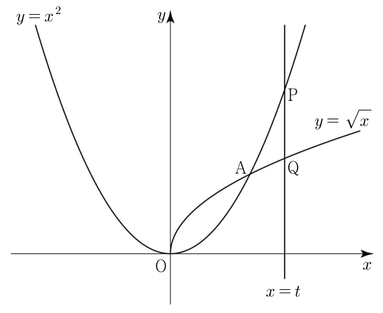
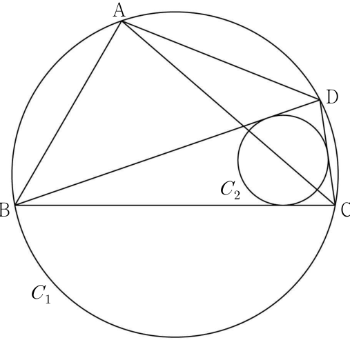

원본 (내부용)함수 \(y=f(x)\)의 그래프가 그림과 같다. 그림: 좌표축에 함수 \(y=f(x)\)의 그래프가 그려져 있다. \(x=1\)에서 \((1,1)\)은 닫힌 점이고, 선분은 \((1,-1)\)의 열린 점에서 시작해 \((3,3)\)의 닫힌 점까지 이어진다. \(x=3\)에서 \((3,-2)\)는 열린 점이며, 이 점에서 오른쪽으로 증가하는 곡선이 이어진다. \( \lim_{x\to1^-}f(x)+\lim_{x\to3^+}f(x) \) 의 값은? [3점]
① \(-2\)② \(-1\)③ \(0\)④ \(1\)⑤ \(2\)
원본 정답 ②
원본 풀이 (내부용)[출제의도] 함수의 극한 이해하기
\(
\lim_{x\to1^-}f(x)=1,\qquad
\lim_{x\to3^+}f(x)=-2
\)
\(
\lim_{x\to1^-}f(x)+\lim_{x\to3^+}f(x)=-1
\)
생성기 숫자판 1/6 · G2f-08#0함수 $y=f\left(x\right)$의 그래프가 그림과 같고, 두 경계의 $x$좌표가 $1$, $3$이며 각 경계의 좌우 극한값이 $(1,-2)$, $(2,-3)$이고 채워진 두 점의 함수값이 $1$, $2$일 때, $\lim_{x\to 1^{+}}f\left(x\right)-\lim_{x\to 3^{-}}f\left(x\right)$의 값으로 옮은 것을 고르세요.
① $-6$② $-5$③ $-4$④ $-3$⑤ $-2$
정답③ $-4$ $x\to 1^{+}$일 때 $f\left(x\right)\to -2$ $x\to 3^{-}$일 때 $f\left(x\right)\to 2$ 따라서 구하는 값은 $-2-2=-4$
생성기 숫자판 2/6 · G2f-08#0함수 $y=f\left(x\right)$의 그래프가 그림과 같고, 두 경계의 $x$좌표가 $1$, $2$이며 각 경계의 좌우 극한값이 $(1,-1)$, $(3,-3)$이고 채워진 두 점의 함수값이 $1$, $3$일 때, $\lim_{x\to 1^{-}}f\left(x\right)+\lim_{x\to 2^{+}}f\left(x\right)$의 값으로 옮은 것을 고르세요.
① $-4$② $-3$③ $-2$④ $-1$⑤ $0$
정답③ $-2$ $x\to 1^{-}$일 때 $f\left(x\right)\to 1$ $x\to 2^{+}$일 때 $f\left(x\right)\to -3$ 따라서 구하는 값은 $1-3=-2$
생성기 숫자판 3/6 · G2f-08#0함수 $y=f\left(x\right)$의 그래프가 그림과 같고, 두 경계의 $x$좌표가 $1$, $2$이며 각 경계의 좌우 극한값이 $(1,-1)$, $(2,-2)$이고 채워진 두 점의 함수값이 $1$, $2$일 때, $\lim_{x\to 1^{+}}f\left(x\right)-\lim_{x\to 2^{-}}f\left(x\right)$의 값으로 옮은 것을 고르세요.
① $-5$② $-4$③ $-3$④ $-2$⑤ $-1$
정답③ $-3$ $x\to 1^{+}$일 때 $f\left(x\right)\to -1$ $x\to 2^{-}$일 때 $f\left(x\right)\to 2$ 따라서 구하는 값은 $-1-2=-3$
생성기 숫자판 4/6 · G2f-08#0함수 $y=f\left(x\right)$의 그래프가 그림과 같고, 두 경계의 $x$좌표가 $1$, $2$이며 각 경계의 좌우 극한값이 $(2,-1)$, $(3,-2)$이고 채워진 두 점의 함수값이 $2$, $3$일 때, $\lim_{x\to 1^{-}}f\left(x\right)+\lim_{x\to 2^{+}}f\left(x\right)$의 값으로 옮은 것을 고르세요.
① $-2$② $-1$③ $0$④ $1$⑤ $2$
정답③ $0$ $x\to 1^{-}$일 때 $f\left(x\right)\to 2$ $x\to 2^{+}$일 때 $f\left(x\right)\to -2$ 따라서 구하는 값은 $2-2=0$
생성기 숫자판 5/6 · G2f-08#0함수 $y=f\left(x\right)$의 그래프가 그림과 같고, 두 경계의 $x$좌표가 $1$, $2$이며 각 경계의 좌우 극한값이 $(1,-2)$, $(3,-3)$이고 채워진 두 점의 함수값이 $1$, $3$일 때, $\lim_{x\to 1^{-}}f\left(x\right)+\lim_{x\to 2^{-}}f\left(x\right)$의 값으로 옮은 것을 고르세요.
① $2$② $3$③ $4$④ $5$⑤ $6$
정답③ $4$ $x\to 1^{-}$일 때 $f\left(x\right)\to 1$ $x\to 2^{-}$일 때 $f\left(x\right)\to 3$ 따라서 구하는 값은 $1+3=4$
생성기 숫자판 6/6 · G2f-08#0함수 $y=f\left(x\right)$의 그래프가 그림과 같고, 두 경계의 $x$좌표가 $1$, $3$이며 각 경계의 좌우 극한값이 $(2,-2)$, $(3,-3)$이고 채워진 두 점의 함수값이 $2$, $3$일 때, $\lim_{x\to 1^{-}}f\left(x\right)+\lim_{x\to 3^{+}}f\left(x\right)$의 값으로 옮은 것을 고르세요.
① $-3$② $-2$③ $-1$④ $0$⑤ $1$
정답③ $-1$ $x\to 1^{-}$일 때 $f\left(x\right)\to 2$ $x\to 3^{+}$일 때 $f\left(x\right)\to -3$ 따라서 구하는 값은 $2-3=-1$
원본 (내부용)\(0<a<1\)인 상수 \(a\)에 대하여 곡선 \(y=\log_a x\) 위에 두 점 \(A(2,\log_a2)\), \(B(4,\log_a4)\)가 있다. 직선 \(AB\)의 기울기가 \(-\frac14\)일 때, \(a\)의 값은? [3점]
① \(\frac18\)② \(\frac14\)③ \(\frac38\)④ \(\frac12\)⑤ \(\frac58\)
원본 정답 ②
원본 풀이 (내부용)[출제의도] 로그의 성질 이해하기
두 점 \(A(2,\log_a2)\), \(B(4,\log_a4)\)를 지나는 직선의 기울기가
\(
\frac{\log_a4-\log_a2}{4-2}
=\frac{\log_a2}{2}=-\frac14
\)
이므로
\(
\log_a2=-\frac12,\qquad a^{-\frac12}=2
\)
\(
a=2^{-2}=\frac14
\)
생성기 숫자판 1/6 · G2M9-12#2$0<a<1$인 상수 $a$에 대하여 곡선 $y=\log_{a}x$ 위에 두 점 $\mathrm{A}\left(6,\ \log_{a}6\right)$, $\mathrm{B}\left(18,\ \log_{a}18\right)$가 있습니다. 직선 $\mathrm{AB}$의 기울기가 $\frac{-1}{12}$일 때, $a$의 값으로 옳은 것을 고르세요.
① $\frac{1}{6}$② $\frac{1}{3}$③ $\frac{1}{2}$④ $\frac{2}{3}$⑤ $\frac{3}{4}$
정답② $\frac{1}{3}$ 직선 $\mathrm{AB}$의 기울기는 $\frac{\log_{a}18-\log_{a}6}{18-6}=\frac{\log_{a}3}{12}$ $\frac{\log_{a}3}{12}=-\frac{1}{12}$이므로 $\log_{a}3=-1$ $a^{-1}=3$이므로 $a=\frac{1}{3}$
생성기 숫자판 2/6 · G2M9-12#2$0<a<1$인 상수 $a$에 대하여 곡선 $y=\log_{a}x$ 위에 두 점 $\mathrm{A}\left(9,\ \log_{a}9\right)$, $\mathrm{B}\left(27,\ \log_{a}27\right)$가 있습니다. 직선 $\mathrm{AB}$의 기울기가 $\frac{-1}{18}$일 때, $a$의 값으로 옳은 것을 고르세요.
① $\frac{1}{6}$② $\frac{1}{3}$③ $\frac{1}{2}$④ $\frac{2}{3}$⑤ $\frac{3}{4}$
정답② $\frac{1}{3}$ 직선 $\mathrm{AB}$의 기울기는 $\frac{\log_{a}27-\log_{a}9}{27-9}=\frac{\log_{a}3}{18}$ $\frac{\log_{a}3}{18}=-\frac{1}{18}$이므로 $\log_{a}3=-1$ $a^{-1}=3$이므로 $a=\frac{1}{3}$
생성기 숫자판 3/6 · G2M9-12#2$0<a<1$인 상수 $a$에 대하여 곡선 $y=\log_{a}x$ 위에 두 점 $\mathrm{A}\left(7,\ \log_{a}7\right)$, $\mathrm{B}\left(21,\ \log_{a}21\right)$가 있습니다. 직선 $\mathrm{AB}$의 기울기가 $\frac{-1}{14}$일 때, $a$의 값으로 옳은 것을 고르세요.
① $\frac{1}{6}$② $\frac{1}{3}$③ $\frac{1}{2}$④ $\frac{2}{3}$⑤ $\frac{3}{4}$
정답② $\frac{1}{3}$ 직선 $\mathrm{AB}$의 기울기는 $\frac{\log_{a}21-\log_{a}7}{21-7}=\frac{\log_{a}3}{14}$ $\frac{\log_{a}3}{14}=-\frac{1}{14}$이므로 $\log_{a}3=-1$ $a^{-1}=3$이므로 $a=\frac{1}{3}$
생성기 숫자판 4/6 · G2M9-12#2$0<a<1$인 상수 $a$에 대하여 곡선 $y=\log_{a}x$ 위에 두 점 $\mathrm{A}\left(13,\ \log_{a}13\right)$, $\mathrm{B}\left(39,\ \log_{a}39\right)$가 있습니다. 직선 $\mathrm{AB}$의 기울기가 $\frac{-1}{26}$일 때, $a$의 값으로 옳은 것을 고르세요.
① $\frac{1}{6}$② $\frac{1}{3}$③ $\frac{1}{2}$④ $\frac{2}{3}$⑤ $\frac{3}{4}$
정답② $\frac{1}{3}$ 직선 $\mathrm{AB}$의 기울기는 $\frac{\log_{a}39-\log_{a}13}{39-13}=\frac{\log_{a}3}{26}$ $\frac{\log_{a}3}{26}=-\frac{1}{26}$이므로 $\log_{a}3=-1$ $a^{-1}=3$이므로 $a=\frac{1}{3}$
생성기 숫자판 5/6 · G2M9-12#2$0<a<1$인 상수 $a$에 대하여 곡선 $y=\log_{a}x$ 위에 두 점 $\mathrm{A}\left(17,\ \log_{a}17\right)$, $\mathrm{B}\left(51,\ \log_{a}51\right)$가 있습니다. 직선 $\mathrm{AB}$의 기울기가 $\frac{-1}{34}$일 때, $a$의 값으로 옳은 것을 고르세요.
① $\frac{1}{6}$② $\frac{1}{3}$③ $\frac{1}{2}$④ $\frac{2}{3}$⑤ $\frac{3}{4}$
정답② $\frac{1}{3}$ 직선 $\mathrm{AB}$의 기울기는 $\frac{\log_{a}51-\log_{a}17}{51-17}=\frac{\log_{a}3}{34}$ $\frac{\log_{a}3}{34}=-\frac{1}{34}$이므로 $\log_{a}3=-1$ $a^{-1}=3$이므로 $a=\frac{1}{3}$
생성기 숫자판 6/6 · G2M9-12#2$0<a<1$인 상수 $a$에 대하여 곡선 $y=\log_{a}x$ 위에 두 점 $\mathrm{A}\left(11,\ \log_{a}11\right)$, $\mathrm{B}\left(33,\ \log_{a}33\right)$가 있습니다. 직선 $\mathrm{AB}$의 기울기가 $\frac{-1}{22}$일 때, $a$의 값으로 옳은 것을 고르세요.
① $\frac{1}{6}$② $\frac{1}{3}$③ $\frac{1}{2}$④ $\frac{2}{3}$⑤ $\frac{3}{4}$
정답② $\frac{1}{3}$ 직선 $\mathrm{AB}$의 기울기는 $\frac{\log_{a}33-\log_{a}11}{33-11}=\frac{\log_{a}3}{22}$ $\frac{\log_{a}3}{22}=-\frac{1}{22}$이므로 $\log_{a}3=-1$ $a^{-1}=3$이므로 $a=\frac{1}{3}$
원본 (내부용)함수 \(y=\sin\frac{x}{2}+\frac{\sqrt3}{2}\;\left(0\leq x<4\pi\right)\)의 그래프와 \(x\)축이 만나는 서로 다른 두 점을 \(A,\ B\)라 할 때, 선분 \(AB\)의 길이는? [3점]
① \(\frac23\pi\)② \(\pi\)③ \(\frac43\pi\)④ \(\frac53\pi\)⑤ \(2\pi\)
원본 정답 ①
원본 풀이 (내부용)[출제의도] 삼각함수의 그래프 이해하기
함수
\(
y=\sin\frac{x}{2}+\frac{\sqrt3}{2}
\quad(0\le x<4\pi)
\)
의 그래프와 \(x\)축이 만나는 점의 \(x\)좌표를 \(t\) \((0\le t<4\pi)\)라 하면
\(
\sin\frac t2+\frac{\sqrt3}{2}=0,\qquad
\sin\frac t2=-\frac{\sqrt3}{2}
\)
\(
0\le\frac t2<2\pi\text{ 이므로 }\frac t2=\frac{4\pi}{3}
\text{ 또는 }\frac t2=\frac{5\pi}{3}
\)
\(
t=\frac{8\pi}{3}\text{ 또는 }t=\frac{10\pi}{3}
\)
선분 \(AB\)의 길이는
\(
\frac{10\pi}{3}-\frac{8\pi}{3}=\frac{2\pi}{3}
\)
생성기 숫자판 1/6 · G2M9-12#5함수 $y=\sin\frac{x}{5}+\frac{\sqrt{2}}{2}\ \left(0\le x<10\pi\right)$의 그래프와 $x$축이 만나는 서로 다른 두 점을 $\mathrm{A}$, $\mathrm{B}$라 할 때, 선분 $\mathrm{AB}$의 길이로 옳은 것을 고르세요.
① $\frac{5}{2}\pi$② $3\pi$③ $\frac{7}{2}\pi$④ $4\pi$⑤ $\frac{9}{2}\pi$
정답① $\frac{5}{2}\pi$ $\frac{x}{5}=t$라 하면 $0\le x<10\pi$에서 $0\le t<2\pi$ $\sin t=-\frac{\sqrt{2}}{2}$에서 $t=\frac{5}{4}\pi$ 또는 $t=\frac{7}{4}\pi$ $x=\frac{25}{4}\pi$ 또는 $x=\frac{35}{4}\pi$ 따라서 $\overline{\mathrm{AB}}=\frac{35}{4}\pi-\frac{25}{4}\pi=\frac{5}{2}\pi$
숫자: 원본 2 3 2 0 4 → 쌍둥이 5 2 2 0 10 · 같은 수: 0 2
생성기 숫자판 2/6 · G2M9-12#5함수 $y=\sin\frac{x}{7}-\frac{\sqrt{2}}{2}\ \left(0\le x<14\pi\right)$의 그래프와 $x$축이 만나는 서로 다른 두 점을 $\mathrm{A}$, $\mathrm{B}$라 할 때, 선분 $\mathrm{AB}$의 길이로 옳은 것을 고르세요.
① $\frac{5}{2}\pi$② $3\pi$③ $\frac{7}{2}\pi$④ $4\pi$⑤ $\frac{9}{2}\pi$
정답③ $\frac{7}{2}\pi$ $\frac{x}{7}=t$라 하면 $0\le x<14\pi$에서 $0\le t<2\pi$ $\sin t=\frac{\sqrt{2}}{2}$에서 $t=\frac{\pi}{4}$ 또는 $t=\frac{3}{4}\pi$ $x=\frac{7}{4}\pi$ 또는 $x=\frac{21}{4}\pi$ 따라서 $\overline{\mathrm{AB}}=\frac{21}{4}\pi-\frac{7}{4}\pi=\frac{7}{2}\pi$
숫자: 원본 2 3 2 0 4 → 쌍둥이 7 2 2 0 14 · 같은 수: 0 2
생성기 숫자판 3/6 · G2M9-12#5함수 $y=\sin\frac{x}{4}-\frac{\sqrt{2}}{2}\ \left(0\le x<8\pi\right)$의 그래프와 $x$축이 만나는 서로 다른 두 점을 $\mathrm{A}$, $\mathrm{B}$라 할 때, 선분 $\mathrm{AB}$의 길이로 옳은 것을 고르세요.
① $\frac{2}{3}\pi$② $2\pi$③ $\frac{10}{3}\pi$④ $\frac{14}{3}\pi$⑤ $6\pi$
정답② $2\pi$ $\frac{x}{4}=t$라 하면 $0\le x<8\pi$에서 $0\le t<2\pi$ $\sin t=\frac{\sqrt{2}}{2}$에서 $t=\frac{\pi}{4}$ 또는 $t=\frac{3}{4}\pi$ $x=\pi$ 또는 $x=3\pi$ 따라서 $\overline{\mathrm{AB}}=3\pi-\pi=2\pi$
숫자: 원본 2 3 2 0 4 → 쌍둥이 4 2 2 0 8 · 같은 수: 0 2 4
생성기 숫자판 4/6 · G2M9-12#5함수 $y=\cos\frac{x}{2}-\frac{\sqrt{2}}{2}\ \left(0\le x<4\pi\right)$의 그래프와 $x$축이 만나는 서로 다른 두 점을 $\mathrm{A}$, $\mathrm{B}$라 할 때, 선분 $\mathrm{AB}$의 길이로 옳은 것을 고르세요.
① $\frac{5}{3}\pi$② $\frac{7}{3}\pi$③ $3\pi$④ $\frac{11}{3}\pi$⑤ $\frac{13}{3}\pi$
정답③ $3\pi$ $\frac{x}{2}=t$라 하면 $0\le x<4\pi$에서 $0\le t<2\pi$ $\cos t=\frac{\sqrt{2}}{2}$에서 $t=\frac{\pi}{4}$ 또는 $t=\frac{7}{4}\pi$ $x=\frac{\pi}{2}$ 또는 $x=\frac{7}{2}\pi$ 따라서 $\overline{\mathrm{AB}}=\frac{7}{2}\pi-\frac{\pi}{2}=3\pi$
숫자: 원본 2 3 2 0 4 → 쌍둥이 2 2 2 0 4 · 같은 수: 0 2 4
생성기 숫자판 5/6 · G2M9-12#5함수 $y=\cos\frac{x}{7}+\frac{\sqrt{3}}{2}\ \left(0\le x<14\pi\right)$의 그래프와 $x$축이 만나는 서로 다른 두 점을 $\mathrm{A}$, $\mathrm{B}$라 할 때, 선분 $\mathrm{AB}$의 길이로 옳은 것을 고르세요.
① $\frac{7}{3}\pi$② $\frac{14}{3}\pi$③ $7\pi$④ $\frac{28}{3}\pi$⑤ $\frac{35}{3}\pi$
정답① $\frac{7}{3}\pi$ $\frac{x}{7}=t$라 하면 $0\le x<14\pi$에서 $0\le t<2\pi$ $\cos t=-\frac{\sqrt{3}}{2}$에서 $t=\frac{5}{6}\pi$ 또는 $t=\frac{7}{6}\pi$ $x=\frac{35}{6}\pi$ 또는 $x=\frac{49}{6}\pi$ 따라서 $\overline{\mathrm{AB}}=\frac{49}{6}\pi-\frac{35}{6}\pi=\frac{7}{3}\pi$
숫자: 원본 2 3 2 0 4 → 쌍둥이 7 3 2 0 14 · 같은 수: 0 2 3
생성기 숫자판 6/6 · G2M9-12#5함수 $y=\cos\frac{x}{4}-\frac{\sqrt{2}}{2}\ \left(0\le x<8\pi\right)$의 그래프와 $x$축이 만나는 서로 다른 두 점을 $\mathrm{A}$, $\mathrm{B}$라 할 때, 선분 $\mathrm{AB}$의 길이로 옳은 것을 고르세요.
① $6\pi$② $\frac{22}{3}\pi$③ $\frac{26}{3}\pi$④ $10\pi$⑤ $\frac{34}{3}\pi$
정답① $6\pi$ $\frac{x}{4}=t$라 하면 $0\le x<8\pi$에서 $0\le t<2\pi$ $\cos t=\frac{\sqrt{2}}{2}$에서 $t=\frac{\pi}{4}$ 또는 $t=\frac{7}{4}\pi$ $x=\pi$ 또는 $x=7\pi$ 따라서 $\overline{\mathrm{AB}}=7\pi-\pi=6\pi$
숫자: 원본 2 3 2 0 4 → 쌍둥이 4 2 2 0 8 · 같은 수: 0 2 4
11. 2025년 9월 11번 · 3점 · 수학Ⅰ 지수·로그 · G2f-06#0
원본 (내부용)함수 \(f(x)=\log_2(x+a)+b\)의 그래프가 그림과 같을 때, \(f(15)\)의 값은? (단, \(a,\ b\)는 상수이다.) [3점] 그림: \(y=f(x)\) 그래프는 증가하는 로그 곡선이다. \(y\)축과 만나는 점의 \(y\)좌표는 \(-2\), \(x\)축과 만나는 점의 \(x\)좌표는 \(3\)으로 표시되어 있다.
① \(\frac32\)② \(2\)③ \(\frac52\)④ \(3\)⑤ \(\frac72\)
원본 정답 ②
원본 풀이 (내부용)[출제의도] 로그함수의 그래프 이해하기
함수 \(f(x)=\log_2(x+a)+b\)의 그래프가 두 점 \((0,-2),(3,0)\)을 지나므로
\(
\log_2a+b=-2\quad\cdots㉠
\)
\(
\log_2(3+a)+b=0\quad\cdots㉡
\)
㉠, ㉡에 의하여 \(\log_2(3+a)-\log_2a=2\)
\(
\log_2(3+a)=\log_2 4a
\)
따라서 \(a=1,\ b=-2\).
함수 \(f(x)=\log_2(x+1)-2\)
\(
f(15)=\log_2(15+1)-2=2
\)
생성기 숫자판 1/6 · G2f-06#0함수 $f\left(x\right)=\log_{2}\left(x+a\right)+b$의 그래프가 그림과 같이 $y$축과 점 $\left(0,-1\right)$에서, $x$축과 점 $\left(2,0\right)$에서 만날 때, $f\left(6\right)$의 값으로 옳은 것을 고르세요. (단, $a$, $b$는 상수입니다.)
① $1$② $2$③ $3$④ $4$⑤ $5$
정답① $1$ $f\left(x\right)=\log_{2}\left(x+a\right)+b$라 하면 $y$절편이 $-1$이므로 $\log_{2}a+b=-1$ $x$절편이 $2$이므로 $\log_{2}\left(2+a\right)+b=0$ 두 식을 빼면 $\log_{2}\frac{2+a}{a}=1$에서 $2+a=2a$이므로 $a=2$, $b=-2$ 따라서 $f\left(6\right)=\log_{2}8-2=1$
숫자: 원본 2 15 2 3 → 쌍둥이 2 0 1 2 0 6 · 같은 수: 2
생성기 숫자판 2/6 · G2f-06#0함수 $f\left(x\right)=\log_{2}\left(x+a\right)+b$의 그래프가 그림과 같이 $y$축과 점 $\left(0,-1\right)$에서, $x$축과 점 $\left(4,0\right)$에서 만날 때, $f\left(12\right)$의 값으로 옳은 것을 고르세요. (단, $a$, $b$는 상수입니다.)
① $-2$② $-1$③ $0$④ $1$⑤ $2$
정답④ $1$ $f\left(x\right)=\log_{2}\left(x+a\right)+b$라 하면 $y$절편이 $-1$이므로 $\log_{2}a+b=-1$ $x$절편이 $4$이므로 $\log_{2}\left(4+a\right)+b=0$ 두 식을 빼면 $\log_{2}\frac{4+a}{a}=1$에서 $4+a=2a$이므로 $a=4$, $b=-3$ 따라서 $f\left(12\right)=\log_{2}16-3=1$
숫자: 원본 2 15 2 3 → 쌍둥이 2 0 1 4 0 12 · 같은 수: 2
생성기 숫자판 3/6 · G2f-06#0함수 $f\left(x\right)=\log_{2}\left(x+a\right)+b$의 그래프가 그림과 같이 $y$축과 점 $\left(0,-2\right)$에서, $x$축과 점 $\left(6,0\right)$에서 만날 때, $f\left(2\right)$의 값으로 옳은 것을 고르세요. (단, $a$, $b$는 상수입니다.)
① $-4$② $-3$③ $-2$④ $-1$⑤ $0$
정답④ $-1$ $f\left(x\right)=\log_{2}\left(x+a\right)+b$라 하면 $y$절편이 $-2$이므로 $\log_{2}a+b=-2$ $x$절편이 $6$이므로 $\log_{2}\left(6+a\right)+b=0$ 두 식을 빼면 $\log_{2}\frac{6+a}{a}=2$에서 $6+a=4a$이므로 $a=2$, $b=-3$ 따라서 $f\left(2\right)=\log_{2}4-3=-1$
숫자: 원본 2 15 2 3 → 쌍둥이 2 0 2 6 0 2 · 같은 수: 2
생성기 숫자판 4/6 · G2f-06#0함수 $f\left(x\right)=\log_{2}\left(x+a\right)+b$의 그래프가 그림과 같이 $y$축과 점 $\left(0,-2\right)$에서, $x$축과 점 $\left(6,0\right)$에서 만날 때, $f\left(62\right)$의 값으로 옳은 것을 고르세요. (단, $a$, $b$는 상수입니다.)
① $2$② $3$③ $4$④ $5$⑤ $6$
정답② $3$ $f\left(x\right)=\log_{2}\left(x+a\right)+b$라 하면 $y$절편이 $-2$이므로 $\log_{2}a+b=-2$ $x$절편이 $6$이므로 $\log_{2}\left(6+a\right)+b=0$ 두 식을 빼면 $\log_{2}\frac{6+a}{a}=2$에서 $6+a=4a$이므로 $a=2$, $b=-3$ 따라서 $f\left(62\right)=\log_{2}64-3=3$
숫자: 원본 2 15 2 3 → 쌍둥이 2 0 2 6 0 62 · 같은 수: 2
생성기 숫자판 5/6 · G2f-06#0함수 $f\left(x\right)=\log_{2}\left(x+a\right)+b$의 그래프가 그림과 같이 $y$축과 점 $\left(0,-1\right)$에서, $x$축과 점 $\left(8,0\right)$에서 만날 때, $f\left(24\right)$의 값으로 옳은 것을 고르세요. (단, $a$, $b$는 상수입니다.)
① $0$② $1$③ $2$④ $3$⑤ $4$
정답② $1$ $f\left(x\right)=\log_{2}\left(x+a\right)+b$라 하면 $y$절편이 $-1$이므로 $\log_{2}a+b=-1$ $x$절편이 $8$이므로 $\log_{2}\left(8+a\right)+b=0$ 두 식을 빼면 $\log_{2}\frac{8+a}{a}=1$에서 $8+a=2a$이므로 $a=8$, $b=-4$ 따라서 $f\left(24\right)=\log_{2}32-4=1$
숫자: 원본 2 15 2 3 → 쌍둥이 2 0 1 8 0 24 · 같은 수: 2
생성기 숫자판 6/6 · G2f-06#0함수 $f\left(x\right)=\log_{2}\left(x+a\right)+b$의 그래프가 그림과 같이 $y$축과 점 $\left(0,-2\right)$에서, $x$축과 점 $\left(12,0\right)$에서 만날 때, $f\left(60\right)$의 값으로 옳은 것을 고르세요. (단, $a$, $b$는 상수입니다.)
① $2$② $3$③ $4$④ $5$⑤ $6$
정답① $2$ $f\left(x\right)=\log_{2}\left(x+a\right)+b$라 하면 $y$절편이 $-2$이므로 $\log_{2}a+b=-2$ $x$절편이 $12$이므로 $\log_{2}\left(12+a\right)+b=0$ 두 식을 빼면 $\log_{2}\frac{12+a}{a}=2$에서 $12+a=4a$이므로 $a=4$, $b=-4$ 따라서 $f\left(60\right)=\log_{2}64-4=2$
숫자: 원본 2 15 2 3 → 쌍둥이 2 0 2 12 0 60 · 같은 수: 2
12. 2025년 9월 12번 · 3점 · 수학Ⅰ 수열 · G2M9-12#6
원본 (내부용)공차가 \(-4\)인 등차수열 \(\{a_n\}\)의 첫째항부터 제 \(n\)항까지의 합을 \(S_n\)이라 하자. \(S_{12}=0\)일 때, \(S_n\)의 최댓값은? [3점]
① \(60\)② \(66\)③ \(72\)④ \(78\)⑤ \(84\)
원본 정답 ③
원본 풀이 (내부용)[출제의도] 등차수열 이해하기
등차수열 \(\{a_n\}\)의 첫째항을 \(a\), 공차를 \(-4\)라 할 때,
\(
S_n=\frac{n\{2a+(n-1)\times(-4)\}}2
\)
\(
=n\{a-2(n-1)\}
\)
\(
S_{12}=12(a-22)=0,\quad a=22
\)
\(
S_n=n(-2n+24)=-2n^2+24n
\)
\(
=-2(n-6)^2+72
\)
\(n=6\)일 때, \(S_n\)의 최댓값은 72.
생성기 숫자판 1/5 · G2M9-12#6공차가 $-2$인 등차수열 $\left\{a_{n}\right\}$의 첫째항부터 제$n$항까지의 합을 $S_{n}$이라 합시다. $S_{9}=0$일 때, $S_{n}$의 최댓값으로 옳은 것을 고르세요.
① $2$② $8$③ $14$④ $20$⑤ $26$
정답④ $20$ $S_{9}=\frac{9\left\{2a_{1}+8\times\left(-2\right)\right\}}{2}=0$이므로 $a_{1}=8$ $a_{n}=8+\left(n-1\right)\times\left(-2\right)=-2n+10$ $a_{n}\ge 0$인 $n$의 최댓값은 $5$이므로 $S_{n}$은 $n=5$일 때 최대 따라서 최댓값은 $S_{5}=\frac{5\left\{2\times 8+4\times\left(-2\right)\right\}}{2}=20$
숫자: 원본 4 12 0 → 쌍둥이 2 9 0 · 같은 수: 0
생성기 숫자판 2/5 · G2M9-12#6공차가 $-4$인 등차수열 $\left\{a_{n}\right\}$의 첫째항부터 제$n$항까지의 합을 $S_{n}$이라 합시다. $S_{8}=0$일 때, $S_{n}$의 최댓값으로 옳은 것을 고르세요.
① $32$② $38$③ $44$④ $50$⑤ $56$
정답① $32$ $S_{8}=\frac{8\left\{2a_{1}+7\times\left(-4\right)\right\}}{2}=0$이므로 $a_{1}=14$ $a_{n}=14+\left(n-1\right)\times\left(-4\right)=-4n+18$ $a_{n}\ge 0$인 $n$의 최댓값은 $4$이므로 $S_{n}$은 $n=4$일 때 최대 따라서 최댓값은 $S_{4}=\frac{4\left\{2\times 14+3\times\left(-4\right)\right\}}{2}=32$
숫자: 원본 4 12 0 → 쌍둥이 4 8 0 · 같은 수: 0 4
생성기 숫자판 3/5 · G2M9-12#6공차가 $-5$인 등차수열 $\left\{a_{n}\right\}$의 첫째항부터 제$n$항까지의 합을 $S_{n}$이라 합시다. $S_{13}=0$일 때, $S_{n}$의 최댓값으로 옳은 것을 고르세요.
① $81$② $87$③ $93$④ $99$⑤ $105$
정답⑤ $105$ $S_{13}=\frac{13\left\{2a_{1}+12\times\left(-5\right)\right\}}{2}=0$이므로 $a_{1}=30$ $a_{n}=30+\left(n-1\right)\times\left(-5\right)=-5n+35$ $a_{n}\ge 0$인 $n$의 최댓값은 $7$이므로 $S_{n}$은 $n=7$일 때 최대 따라서 최댓값은 $S_{7}=\frac{7\left\{2\times 30+6\times\left(-5\right)\right\}}{2}=105$
숫자: 원본 4 12 0 → 쌍둥이 5 13 0 · 같은 수: 0
생성기 숫자판 4/5 · G2M9-12#6공차가 $-4$인 등차수열 $\left\{a_{n}\right\}$의 첫째항부터 제$n$항까지의 합을 $S_{n}$이라 합시다. $S_{10}=0$일 때, $S_{n}$의 최댓값으로 옳은 것을 고르세요.
① $50$② $56$③ $62$④ $68$⑤ $74$
정답① $50$ $S_{10}=\frac{10\left\{2a_{1}+9\times\left(-4\right)\right\}}{2}=0$이므로 $a_{1}=18$ $a_{n}=18+\left(n-1\right)\times\left(-4\right)=-4n+22$ $a_{n}\ge 0$인 $n$의 최댓값은 $5$이므로 $S_{n}$은 $n=5$일 때 최대 따라서 최댓값은 $S_{5}=\frac{5\left\{2\times 18+4\times\left(-4\right)\right\}}{2}=50$
숫자: 원본 4 12 0 → 쌍둥이 4 10 0 · 같은 수: 0 4
생성기 숫자판 5/5 · G2M9-12#6공차가 $-3$인 등차수열 $\left\{a_{n}\right\}$의 첫째항부터 제$n$항까지의 합을 $S_{n}$이라 합시다. $S_{11}=0$일 때, $S_{n}$의 최댓값으로 옳은 것을 고르세요.
① $40$② $42$③ $45$④ $48$⑤ $50$
정답③ $45$ $S_{11}=\frac{11(2a_1+10(-3))}{2}=0$이므로 $a_1=15$ $a_n=15-3(n-1)=18-3n$ $a_n\ge0$인 최대 자연수 $n$은 $6$이므로 $S_n$은 $n=6$일 때 최대 $S_6=\frac{6(2\cdot15+5(-3))}{2}=45$
숫자: 원본 4 12 0 → 쌍둥이 3 11 0 · 같은 수: 0
13. 2025년 9월 13번 · 3점 · 수학Ⅰ 지수·로그 · G2M9-12#7
원본 (내부용)\(1\)이 아닌 세 양수 \(a,\ b,\ c\)가 \( a^3=b^2,\qquad \log_a c=\log_b c+1 \) 을 만족시킬 때, \(\log_c ab\)의 값은? [3점]
① \(\frac16\)② \(\frac13\)③ \(\frac12\)④ \(\frac23\)⑤ \(\frac56\)
원본 정답 ⑤
원본 풀이 (내부용)[출제의도] 로그 이해하기
\(
a^3=b^2=k\quad(k\text{는 1이 아닌 양수})
\)
라 하면
\(
a=k^{\frac13},\qquad b=k^{\frac12}
\)
\(
\log_a c=\log_{k^{\frac13}}c=3\log_kc
\)
\(
\log_b c=\log_{k^{\frac12}}c=2\log_kc
\)
이므로
\(
\log_a c=\log_b c+1
\)
\(
3\log_kc=2\log_kc+1
\)
\(
\log_kc=1,\quad c=k
\)
\(
\log_c ab=\log_k k^{\frac13}k^{\frac12}
=\log_k k^{\frac56}=\frac56
\)
생성기 숫자판 1/6 · G2M9-12#7$1$이 아닌 세 양수 $a$, $b$, $c$가 $a^{3}=b^{6},\ \log_{a}c=\log_{b}c-3$? 만족시킬 때, $\log_{c}ab$의 값으로 옳은 것을 고르세요.
① $\frac{1}{2}$② $1$③ $\frac{3}{2}$④ $2$⑤ $\frac{5}{2}$
원본 (내부용)\(2\) 이상의 자연수 \(n\)에 대하여 \(n^2-12n+27\)의 \(n\)제곱근 중 음의 실수인 것의 개수를 \(f(n)\)이라 할 때, \( \sum_{n=2}^{20} f(n) \) 의 값은? [4점]
① \(6\)② \(7\)③ \(8\)④ \(9\)⑤ \(10\)
원본 정답 ④
원본 풀이 (내부용)[출제의도] 거듭제곱근을 활용하여 문제 해결하기
2 이상의 자연수 \(n\)에 대하여
(i) \(n\)이 홀수인 경우
\(
n^2-12n+27\ge0\text{이면 }f(n)=0
\)
\(
n^2-12n+27<0\text{이면 }f(n)=1
\)
(ii) \(n\)이 짝수인 경우
\(
n^2-12n+27>0\text{이면 }f(n)=1
\)
\(
n^2-12n+27\le0\text{이면 }f(n)=0
\)
\(
n^2-12n+27=(n-3)(n-9)
\)
이므로 (i), (ii)에 의하여
\(
\sum_{n=2}^{20}f(n)=f(2)+f(5)+f(7)+f(10)+f(12)
+f(14)+f(16)+f(18)+f(20)=9
\)
쌍둥이 1/5 · 4점 쌍둥이$2$ 이상의 자연수 $n$에 대하여 $n^2-10n+21$의 $n$제곱근 중 음의 실수인 것의 개수를 $f(n)$이라 할 때 $\sum_{n=2}^{19}f(n)$을 구하세요.
① $8$② $9$③ $10$④ $11$⑤ $12$
정답② $9$ 홀수 차수의 실수근은 피제곱수의 부호와 무관하게 음의 근이 하나 있습니다. 짝수 차수에는 음의 실근이 없습니다. $2$부터 $19$까지 홀수는 9개이므로 합은 9입니다.
숫자: 원본 2 12 27 2 → 쌍둥이 2 10 21 2 · 같은 수: 2
쌍둥이 2/5 · 4점 쌍둥이$2$ 이상의 자연수 $n$에 대하여 $n^{2} - 12 n + 20$의 $n$제곱근 중 음의 실수인 것의 개수를 $f(n)$이라 할 때, $\sum_{n=2}^{16}f(n)$의 값으로 옳은 것을 고르세요.
① $4$② $5$③ $6$④ $7$⑤ $8$
정답④ $7$ $n^{2} - 12 n + 20=(n-2)(n-10)$이므로 $2<n<10$에서 음수, $n=2,\ 10$에서 $0$, 나머지에서 양수입니다. $n$이 홀수이면 음의 실수인 $n$제곱근은 값이 음수일 때만 $1$개, $n$이 짝수이면 값이 양수일 때만 $1$개입니다. $f(3)=1$, $f(5)=1$, $f(7)=1$, $f(9)=1$, $f(12)=1$, $f(14)=1$, $f(16)=1$ 합은 $7$
숫자: 원본 2 12 27 2 → 쌍둥이 2 12 20 2 · 같은 수: 2 12
쌍둥이 3/5 · 4점 쌍둥이$2$ 이상의 자연수 $n$에 대하여 $n^{2} - 12 n + 32$의 $n$제곱근 중 음의 실수인 것의 개수를 $f(n)$이라 할 때, $\sum_{n=2}^{18}f(n)$의 값으로 옳은 것을 고르세요.
① $4$② $5$③ $6$④ $7$⑤ $8$
정답⑤ $8$ $n^{2} - 12 n + 32=(n-4)(n-8)$이므로 $4<n<8$에서 음수, $n=4,\ 8$에서 $0$, 나머지에서 양수입니다. $n$이 홀수이면 음의 실수인 $n$제곱근은 값이 음수일 때만 $1$개, $n$이 짝수이면 값이 양수일 때만 $1$개입니다. $f(2)=1$, $f(5)=1$, $f(7)=1$, $f(10)=1$, $f(12)=1$, $f(14)=1$, $f(16)=1$, $f(18)=1$ 합은 $8$
숫자: 원본 2 12 27 2 → 쌍둥이 2 12 32 2 · 같은 수: 2 12
쌍둥이 4/5 · 4점 쌍둥이$2$ 이상의 자연수 $n$에 대하여 $n^{2} - 8 n + 7$의 $n$제곱근 중 음의 실수인 것의 개수를 $f(n)$이라 할 때, $\sum_{n=2}^{15}f(n)$의 값으로 옳은 것을 고르세요.
① $6$② $7$③ $8$④ $9$⑤ $10$
정답① $6$ $n^{2} - 8 n + 7=(n-1)(n-7)$이므로 $1<n<7$에서 음수, $n=1,\ 7$에서 $0$, 나머지에서 양수입니다. $n$이 홀수이면 음의 실수인 $n$제곱근은 값이 음수일 때만 $1$개, $n$이 짝수이면 값이 양수일 때만 $1$개입니다. $f(3)=1$, $f(5)=1$, $f(8)=1$, $f(10)=1$, $f(12)=1$, $f(14)=1$ 합은 $6$
숫자: 원본 2 12 27 2 → 쌍둥이 2 8 7 2 · 같은 수: 2
쌍둥이 5/5 · 4점 쌍둥이$2$ 이상의 자연수 $n$에 대하여 $n^2-16n+55$의 $n$제곱근 중 음의 실수인 것의 개수를 $f(n)$이라 할 때 $\sum_{n=2}^{22}f(n)$을 구하세요.
① $9$② $10$③ $11$④ $12$⑤ $13$
정답③ $11$ 홀수 차수에는 음의 실근이 정확히 하나 있고 짝수 차수에는 없습니다. $2$부터 $22$까지 홀수는 11개이므로 합은 11입니다.
숫자: 원본 2 12 27 2 → 쌍둥이 2 16 55 2 · 같은 수: 2
15. 2025년 9월 15번 · 4점 · 수학Ⅰ 수열 · 4점 쌍둥이
원본 (내부용)자연수 \(n\)에 대하여 함수 \(f(x)\)를 \( f(x)=x^2-nx-2n^2 \) 이라 하자. 곡선 \(y=f(x)\)와 직선 \(y=x+n\)이 만나는 서로 다른 두 점을 \(A_n,\ B_n\)이라 하자. 삼각형 \(A_nOB_n\)의 넓이를 \(S_n\)이라 할 때, \( \sum_{k=1}^{4}S_k \) 의 값은? (단, \(O\)는 원점이다.) [4점]
① \(30\)② \(35\)③ \(40\)④ \(45\)⑤ \(50\)
원본 정답 ⑤
원본 풀이 (내부용)[출제의도] 여러 가지 수열의 합 이해하기
자연수 \(n\)에 대하여 두 점 \(A_n,B_n\)의 \(x\)좌표를 각각
\(\alpha_n,\beta_n\) \((\alpha_n<\beta_n)\)이라 하면
\(
\alpha_n,\beta_n\text{은 }x\text{에 대한 방정식 }
x^2-nx-2n^2=x+n
\)
의 실근이다.
\(
x^2-(n+1)x-n(2n+1)=0
\)
\(
(x+n)(x-2n-1)=0
\)
에서
\(
\alpha_n=-n,\qquad \beta_n=2n+1
\)
두 점 \(A_n(-n,0),B_n(2n+1,3n+1)\)에 대하여 점 \(B_n\)에서 선분 \(OA_n\)에 내린 수선의 발을 \(H_n\)이라 하면
\(
H_n(2n+1,0)
\)
\(
S_n=\frac12\times\overline{OA_n}\times\overline{B_nH_n}
\)
\(
=\frac12\times n\times(3n+1)
=\frac32n^2+\frac12n
\)
따라서
\(
\sum_{k=1}^{4}S_k
=\sum_{k=1}^{4}\left(\frac32k^2+\frac12k\right)
\)
\(
=\frac32\times\frac{4\times5\times9}{6}
+\frac12\times\frac{4\times5}{2}
=50
\)
---
### 교사용 해설
쌍둥이 1/5 · 4점 쌍둥이자연수 $n$에 대하여 함수 $f(x)=x^{2}-4nx-5n^{2}$이라 합니다. 곡선 $y=f(x)$와 직선 $y=x+n$이 만나는 서로 다른 두 점을 $A_{n}$, $B_{n}$이라 하고, 삼각형 $A_{n}OB_{n}$의 넓이를 $S_{n}$이라 할 때, $\sum_{k=1}^{3}S_{k}$의 값으로 옳은 것을 고르세요. (단, $O$는 원점입니다.)
쌍둥이 2/5 · 4점 쌍둥이자연수 $n$에 대하여 함수 $f(x)=x^{2}-6nx-7n^{2}$이라 합니다. 곡선 $y=f(x)$와 직선 $y=x+n$이 만나는 서로 다른 두 점을 $A_{n}$, $B_{n}$이라 하고, 삼각형 $A_{n}OB_{n}$의 넓이를 $S_{n}$이라 할 때, $\sum_{k=1}^{4}S_{k}$의 값으로 옳은 것을 고르세요. (단, $O$는 원점입니다.)
① $105$② $115$③ $125$④ $135$⑤ $145$
정답③ $125$ $x^{2}-6nx-7n^{2}=x+n$에서 $x^{2}-(6n+1)x-7n^{2}-n=0$, 즉 $(x+n)(x-7n-1)=0$이다. 교점은 $A_n=(-n,0)$, $B_n=(7n+1,8n+1)$이다. 따라서 $S_n=\frac12\left|(-n)(8n+1)\right|=\frac{8n^2+n}{2}$. $\sum_{k=1}^{4}S_k=\frac12\left(8\sum_{k=1}^4k^2+\sum_{k=1}^4k\right)=\frac12(8\cdot30+10)=125$.
숫자: 원본 2 1 → 쌍둥이 6 7 1 · 같은 수: 1
쌍둥이 3/5 · 4점 쌍둥이자연수 $n$에 대하여 함수 $f(x)=x^{2}-3nx-4n^{2}$이라 합니다. 곡선 $y=f(x)$와 직선 $y=x+n$이 만나는 서로 다른 두 점을 $A_{n}$, $B_{n}$이라 하고, 삼각형 $A_{n}OB_{n}$의 넓이를 $S_{n}$이라 할 때, $\sum_{k=1}^{3}S_{k}$의 값으로 옳은 것을 고르세요. (단, $O$는 원점입니다.)
원본 (내부용)실수 \(t\;(t>1)\)에 대하여 직선 \(x=t\)가 두 곡선 \(y=x^2,\ y=\sqrt{x}\)와 만나는 점을 각각 \(P,\ Q\)라 하자. 점 \(A(1,1)\)에 대하여 삼각형 \(APQ\)의 넓이를 \(S(t)\)라 할 때, \( \lim_{t\to1^+}\frac{S(t)}{(t-1)^2} \) 의 값은? [4점] 그림: 좌표평면에 \(y=x^2\), \(y=\sqrt{x}\)의 그래프와 직선 \(x=t\)가 그려져 있다. 두 곡선은 \(O\)와 \(A(1,1)\)에서 만난다. 직선 \(x=t\)와 포물선의 교점이 \(P\), 제곱근 곡선의 교점이 \(Q\)로 표시되어 있다.

① \(\frac14\)② \(\frac12\)③ \(\frac34\)④ \(1\)⑤ \(\frac54\)
원본 정답 ③
원본 풀이 (내부용)[출제의도] 함수의 극한을 활용하여 문제 해결하기
점 \(P\)의 좌표는 \(P(t,t^2)\)
점 \(Q\)의 좌표는 \(Q(t,\sqrt t)\)
점 \(A\)에서 직선 \(x=t\)에 내린 수선의 발을 \(H\)라 하면 \(H(t,1)\).
\(
S(t)=\frac12\times\overline{PQ}\times\overline{AH}
\)
\(
=\frac12\times(t^2-\sqrt t)\times(t-1)
\)
\(
\lim_{t\to1^+}\frac{S(t)}{(t-1)^2}
=\lim_{t\to1^+}\frac{(t^2-\sqrt t)(t-1)}{2(t-1)^2}
\)
\(
=\frac12\times\lim_{t\to1^+}
\frac{t^2-\sqrt t}{t-1}
\)
\(
=\frac12\times\lim_{t\to1^+}
\frac{t^4-t}{(t-1)(t^2+\sqrt t)}
\)
\(
=\frac12\times\lim_{t\to1^+}
\frac{t(t-1)(t^2+t+1)}{(t-1)(t^2+\sqrt t)}
\)
\(
=\frac12\times\lim_{t\to1^+}
\frac{t(t^2+t+1)}{t^2+\sqrt t}=\frac34
\)
쌍둥이 1/5 · 4점 쌍둥이실수 $t\left(t>1\right)$에 대하여 직선 $x=t$가 두 곡선 $y=x^{4}$, $y=\sqrt{x}$와 만나는 점을 각각 $P$, $Q$라 합니다. 점 $A\left(1,1\right)$에 대하여 삼각형 $APQ$의 넓이를 $S\left(t\right)$라 할 때, $\lim_{t\to 1+}\frac{S\left(t\right)}{\left(t-1\right)^{2}}$의 값으로 옳은 것을 고르세요.
① $\frac{7}{4}$② $2$③ $\frac{9}{4}$④ $\frac{5}{2}$⑤ $\frac{11}{4}$
쌍둥이 2/5 · 4점 쌍둥이실수 $t\left(t>1\right)$에 대하여 직선 $x=t$가 두 곡선 $y=x^{3}$, $y=\sqrt{x}$와 만나는 점을 각각 $P$, $Q$라 합니다. 점 $A\left(1,1\right)$에 대하여 삼각형 $APQ$의 넓이를 $S\left(t\right)$라 할 때, $\lim_{t\to 1+}\frac{S\left(t\right)}{\left(t-1\right)^{2}}$의 값으로 옳은 것을 고르세요.
① $\frac{5}{4}$② $\frac{3}{2}$③ $\frac{7}{4}$④ $2$⑤ $\frac{9}{4}$
쌍둥이 3/5 · 4점 쌍둥이실수 $t\left(t>1\right)$에 대하여 직선 $x=t$가 두 곡선 $y=x^{3}$, $y=\sqrt[3]{x}$와 만나는 점을 각각 $P$, $Q$라 합니다. 점 $A\left(1,1\right)$에 대하여 삼각형 $APQ$의 넓이를 $S\left(t\right)$라 할 때, $\lim_{t\to 1+}\frac{S\left(t\right)}{\left(t-1\right)^{2}}$의 값으로 옳은 것을 고르세요.
① $\frac{2}{3}$② $\frac{5}{6}$③ $1$④ $\frac{7}{6}$⑤ $\frac{4}{3}$
쌍둥이 4/5 · 4점 쌍둥이실수 $t\left(t>1\right)$에 대하여 직선 $x=t$가 두 곡선 $y=x^{4}$, $y=x^{1/3}$과 만나는 점을 각각 $P$, $Q$라 합니다. 점 $A\left(1,1\right)$에 대하여 삼각형 $APQ$의 넓이를 $S\left(t\right)$라 할 때, $\lim_{t\to 1+}\frac{S\left(t\right)}{\left(t-1\right)^2}$의 값을 구하시오. [4점]
① $5/3$② $11/6$③ $2$④ $7/4$⑤ $13/6$
정답② $11/6$ $P=(t,t^{4})$, $Q=(t,t^{1/3})$이므로 $S(t)=\frac12(t-1)\left(t^{4}-t^{1/3}\right)$. $t^r=1+r(t-1)+o(t-1)$을 쓰면 $t^{4}-t^{1/3}=(4-1/3)(t-1)+o(t-1)$. 따라서 극한은 $\frac12(4-1/3)=11/6$이다.
숫자: 원본 1 1 1 1 1 1 1 → 쌍둥이 1 3 1 1 1 1 · 같은 수: 1
쌍둥이 5/5 · 4점 쌍둥이실수 $t\left(t>1\right)$에 대하여 직선 $x=t$가 두 곡선 $y=x^{5}$, $y=x^{1/2}$과 만나는 점을 각각 $P$, $Q$라 합니다. 점 $A\left(1,1\right)$에 대하여 삼각형 $APQ$의 넓이를 $S\left(t\right)$라 할 때, $\lim_{t\to 1+}\frac{S\left(t\right)}{\left(t-1\right)^2}$의 값을 구하시오. [4점]
① $2$② $7/3$③ $9/4$④ $5/2$⑤ $11/4$
정답③ $9/4$ $P=(t,t^{5})$, $Q=(t,t^{1/2})$이므로 $S(t)=\frac12(t-1)\left(t^{5}-t^{1/2}\right)$. $t^r=1+r(t-1)+o(t-1)$을 쓰면 $t^{5}-t^{1/2}=(5-1/2)(t-1)+o(t-1)$. 따라서 극한은 $\frac12(5-1/2)=9/4$이다.
숫자: 원본 1 1 1 1 1 1 1 → 쌍둥이 1 2 1 1 1 1 · 같은 수: 1
18. 2025년 9월 18번 · 4점 · 수학Ⅰ 삼각함수 · 4점 쌍둥이
원본 (내부용)두 양수 \(a,\ b\)에 대하여 함수 \( f(x)=a\cos\left(bx-\frac{\pi}{4}\right) \) 가 \(0\leq x\leq\pi\)에서 최댓값 \(4\), 최솟값 \(-2\sqrt2\)를 가질 때, \(a+b\)의 값은? [4점]
① \(\frac72\)② \(4\)③ \(\frac92\)④ \(5\)⑤ \(\frac{11}{2}\)
원본 정답 ④
원본 풀이 (내부용)[출제의도] 삼각함수를 활용하여 문제 해결하기
함수 \(y=a\cos\left(bx-\frac{\pi}{4}\right)\)는
\(
a\cos\left(bx-\frac{\pi}{4}\right)
=a\cos b\left(x-\frac{\pi}{4b}\right)
\)
이므로 함수 \(y=a\cos bx\)의 그래프를 \(x\)축의 양의 방향으로
\(\frac{\pi}{4b}\)만큼 평행이동한 그래프와 일치한다.
함수 \(y=a\cos bx\)의 주기는 \(\frac{2\pi}{b}\)이므로 함수 \(f(x)\)의 그래프의 개형은 다음과 같다.
**그래프 설명:** \(y=f(x)\)는 \(x=0\)에서 \(y=a\)이며, \(x=\frac{\pi}{4b}\)에서 최댓값 \(a\)를 갖는다. \(x=\frac{3\pi}{4b}\)에서 \(x\)축을 지나고 \(x=\frac{5\pi}{4b}\)에서 최솟값을 갖는 코사인 곡선이다. 그림에는 \(x\)축, \(y\)축, 원점 \(O\), 수평선 \(y=a\), 곡선 \(y=f(x)\)가 표시되어 있다.
\(
0\le x\le\pi
\)
에서 함수 \(f(x)\)의 최솟값이 음수이므로
\(
\frac{3\pi}{4b}<\pi\quad\cdots㉠
\)
함수 \(f(x)\)의 최댓값이 4이므로 \(a=4\).
\(
\frac{5\pi}{4b}\le\pi
\)
일 때, 함수 \(f(x)\)의 최솟값이 \(-4\) \((\ne-2\sqrt2)\)이므로
\(
\pi<\frac{5\pi}{4b}\quad\cdots㉡
\)
㉠, ㉡에 의하여
\(
0\le x\le\pi\text{에서 함수 }f(x)\text{가 }x=\pi\text{일 때 최솟값 }-2\sqrt2\text{를 갖는다.}
\)
\(
\frac{3\pi}{4b}<\pi<\frac{5\pi}{4b}
\)
이므로
\(
\frac{\pi}{2}<b\pi-\frac{\pi}{4}<\pi
\)
\(
f(\pi)=4\cos\left(b\pi-\frac{\pi}{4}\right)=-2\sqrt2
\)
\(
\cos\left(b\pi-\frac{\pi}{4}\right)=-\frac{\sqrt2}{2}
\)
\(
b\pi-\frac{\pi}{4}=\frac{3\pi}{4},\quad b=1
\)
\(
a+b=5
\)
쌍둥이 1/5 · 4점 쌍둥이두 양수 $a$, $b$에 대하여 함수 $f(x)=a\cos\left(bx-\frac{\pi}{6}\right)$가 $0\le x\le\pi$에서 최댓값 $2$, 최솟값 $- \sqrt{3}$을 가질 때, $a+b$의 값으로 옳은 것을 고르세요.
쌍둥이 2/5 · 4점 쌍둥이두 양수 $a$, $b$에 대하여 함수 $f(x)=a\cos\left(bx-\frac{\pi}{3}\right)$가 $0\le x\le\frac{\pi}{2}$에서 최댓값 $6$, 최솟값 $-3$을 가질 때, $a+b$의 값으로 옳은 것을 고르세요.
쌍둥이 3/5 · 4점 쌍둥이두 양수 $a$, $b$에 대하여 함수 $f(x)=a\cos\left(bx-\frac{\pi}{4}\right)$가 $0\le x\le\frac{\pi}{3}$에서 최댓값 $4$, 최솟값 $-2$를 가질 때, $a+b$의 값으로 옳은 것을 고르세요.
① $\frac{13}{2}$② $\frac{27}{4}$③ $7$④ $\frac{29}{4}$⑤ $\frac{15}{2}$
쌍둥이 4/5 · 4점 쌍둥이양수 $a,b$에 대하여 $f(x)=a\cos(bx-\pi/4)$가 $0\le x\le\pi/3$에서 최댓값 8, 최솟값 $-4$를 가집니다. $a+b$를 구하세요.
① $41/4$② $42/4$③ $43/4$④ $44/4$⑤ $45/4$
정답③ $43/4$ 최댓값이 8이므로 $a=8$입니다. 위상 구간은 $-\pi/4$에서 $2\pi/3$까지여서 0을 지나 최댓값을 가집니다. $-4$는 끝점에서 코사인이 $-1/2$일 때 생깁니다. $b\pi/3-\pi/4=2\pi/3$에서 $b=11/4$, 따라서 $a+b=43/4$입니다.
숫자: 원본 4 0 4 2 2 → 쌍둥이 4 0 3 8 4 · 같은 수: 0 4
쌍둥이 5/5 · 4점 쌍둥이양수 $a,b$에 대하여 $f(x)=a\cos(bx-\pi/6)$이 $0\le x\le\pi/2$에서 최댓값 $4\sqrt3$, 최솟값 $-6$을 가집니다. $a+b$를 구하세요.
① $4\sqrt3+1$② $4\sqrt3+2$③ $4\sqrt3+3$④ $4\sqrt3+4$⑤ $4\sqrt3+5$
정답② $4\sqrt3+2$ 최댓값에서 $a=4\sqrt3$입니다. 위상 구간은 $-\pi/6$부터 시작하여 0을 포함합니다. $-6$은 끝점에서 코사인이 $-\sqrt3/2$일 때이므로 $b\pi/2-\pi/6=5\pi/6$, 따라서 $b=2$입니다.
숫자: 원본 4 0 4 2 2 → 쌍둥이 6 0 2 4 3 6 · 같은 수: 0 2 4
19. 2025년 9월 19번 · 4점 · 수학Ⅰ 지수·로그 · 4점 쌍둥이
원본 (내부용)두 양수 \(a,\ b\)에 대하여 좌표평면 위에 두 점 \(A(a,3^a+b)\), \(B(a+3,3^{a+3}+b)\)가 있다. 직선 \(y=x\) 위의 점 \(P\)에 대하여 \(\overline{AP}+\overline{BP}\)의 최솟값은 \(55\)이다. 곡선 \(y=\log_3(x-a-b)\) 위의 점 \(C\)에 대하여 점 \(C\)의 \(y\)좌표가 \(a+3\)이고 \(\overline{AC}=a+55\)일 때, \(a+b\)의 값은? [4점]
원본 풀이 (내부용)[출제의도] 지수함수와 로그함수를 활용하여 문제 해결하기
두 점 \(A,B\)는 곡선 \(y=3^x+b\) 위의 점이다.
\(b>0\)이므로 곡선 \(y=3^x+b\)는 직선 \(y=x\)와 만나지 않는다.
점 \(B\)를 직선 \(y=x\)에 대하여 대칭이동한 점을
\(B'(a^{3+a+b},a+3)\)이라 하자.
\(
\overline{AP}+\overline{BP}
=\overline{AP}+\overline{B'P}\ge\overline{AB'}
\)
이므로 \(\overline{AP}+\overline{BP}\)의 값은 점 \(P\)가 직선 \(AB'\)과 직선 \(y=x\)의 교점일 때 최소이다.
직선 \(AB'\)과 직선 \(y=x\)의 교점을 \(P_0\)라 하면
\(
\overline{AP_0}+\overline{BP_0}
=\overline{AP_0}+\overline{B'P_0}
=\overline{AB'}=55
\)
점 \(C\)의 \(y\)좌표가 \(a+3\)이므로
\(
\log_3(x-a)=a+3,\quad x=3^{a+3}+a
\)
\(
C(3^{a+3}+a,\ a+3)
\)
점 \(C\)는 점 \(B'\)을 \(x\)축의 양의 방향으로 \(a\;(a>0)\)만큼 평행이동한 점이므로 \(\overline{B'C}=a\)이고, 직선 \(B'C\)는 \(x\)축과 평행하다.
\(
\overline{AB'}+\overline{B'C}=\overline{AC}
\)
이므로 점 \(B'\)는 선분 \(AC\) 위의 점이고 직선 \(AB'\)은 \(x\)축과 평행하다.
\(
3^a+b=a+3\quad\cdots㉠
\)
\(\overline{AB'}=55\)이므로
\(
a^{3+a+b}+b-a=55\quad\cdots㉡
\)
㉠, ㉡에 의하여 \(3^{a+3}-3^a=52\)
\(
3^a=2,\quad a=\log_3 2,\quad b=a+1
\)
\(
a+b=2a+1=\log_3 12
\)
쌍둥이 1/5 · 4점 쌍둥이두 양수 $a,\ b$에 대하여 좌표평면 위에 두 점 $A\left(a,\ 3^{a}+b\right)$, $B\left(a+2,\ 3^{a+2}+b\right)$가 있습니다. 직선 $y=x$ 위의 점 $P$에 대하여 $\overline{AP}+\overline{BP}$의 최솟값은 $18$입니다. 곡선 $y=\log_{3}\left(x-a-b\right)$ 위의 점 $C$에 대하여 점 $C$의 $y$좌표가 $a+2$이고 $\overline{AC}=a+18$일 때, $a+b$의 값으로 옳은 것을 고르세요.
① $\log_{3}2$② $\log_{3}4$③ $\log_{3}6$④ $\log_{3}8$⑤ $\log_{3}10$
정답② $\log_{3}4$ 점 $A$를 직선 $y=x$에 대하여 대칭이동한 점을 $A'\left(3^{a}+b,\ a\right)$라 하면 $\overline{AP}+\overline{BP}$의 최솟값은 $\overline{A'B}=18$ $\log_{3}\left(x-a-b\right)=a+2$에서 $x=3^{a+2}+a+b$이므로 $C\left(3^{a+2}+a+b,\ a+2\right)$ $3^{a}=u$라 하면 $\overline{A'B}^{2}=\left(a+2-u-b\right)^{2}+\left(9u+b-a\right)^{2}=18^{2}$, $\overline{AC}^{2}=\left(9u+b\right)^{2}+\left(a+2-u-b\right)^{2}=\left(a+18\right)^{2}$ 두 식을 빼면 $a\left\{2\left(9u+b\right)-a\right\}=36a+a^{2}$이므로 $9u+b-a=18$이고, 첫 식에서 $a+2-u-b=0$ 두 식을 더하면 $8u+2=18$, $u=2$이므로 $a=\log_{3}2$, $b=a$ $a+b=2\log_{3}2=\log_{3}4$
쌍둥이 2/5 · 4점 쌍둥이두 양수 $a,\ b$에 대하여 좌표평면 위에 두 점 $A\left(a,\ 3^{a}+b\right)$, $B\left(a+4,\ 3^{a+4}+b\right)$가 있습니다. 직선 $y=x$ 위의 점 $P$에 대하여 $\overline{AP}+\overline{BP}$의 최솟값은 $164$입니다. 곡선 $y=\log_{3}\left(x-a-b\right)$ 위의 점 $C$에 대하여 점 $C$의 $y$좌표가 $a+4$이고 $\overline{AC}=a+164$일 때, $a+b$의 값으로 옳은 것을 고르세요.
① $\log_{3}18$② $\log_{3}36$③ $\log_{3}54$④ $\log_{3}72$⑤ $\log_{3}90$
정답② $\log_{3}36$ 점 $A$를 직선 $y=x$에 대하여 대칭이동한 점을 $A'\left(3^{a}+b,\ a\right)$라 하면 $\overline{AP}+\overline{BP}$의 최솟값은 $\overline{A'B}=164$ $\log_{3}\left(x-a-b\right)=a+4$에서 $x=3^{a+4}+a+b$이므로 $C\left(3^{a+4}+a+b,\ a+4\right)$ $3^{a}=u$라 하면 $\overline{A'B}^{2}=\left(a+4-u-b\right)^{2}+\left(81u+b-a\right)^{2}=164^{2}$, $\overline{AC}^{2}=\left(81u+b\right)^{2}+\left(a+4-u-b\right)^{2}=\left(a+164\right)^{2}$ 두 식을 빼면 $a\left\{2\left(81u+b\right)-a\right\}=328a+a^{2}$이므로 $81u+b-a=164$이고, 첫 식에서 $a+4-u-b=0$ 두 식을 더하면 $80u+4=164$, $u=2$이므로 $a=\log_{3}2$, $b=a+2$ $a+b=2\log_{3}2+2=\log_{3}36$
쌍둥이 3/5 · 4점 쌍둥이두 양수 $a,\ b$에 대하여 좌표평면 위에 두 점 $A\left(a,\ 3^{a}+b\right)$, $B\left(a+5,\ 3^{a+5}+b\right)$가 있습니다. 직선 $y=x$ 위의 점 $P$에 대하여 $\overline{AP}+\overline{BP}$의 최솟값은 $489$입니다. 곡선 $y=\log_{3}\left(x-a-b\right)$ 위의 점 $C$에 대하여 점 $C$의 $y$좌표가 $a+5$이고 $\overline{AC}=a+489$일 때, $a+b$의 값으로 옳은 것을 고르세요.
① $\log_{3}54$② $\log_{3}108$③ $\log_{3}162$④ $\log_{3}216$⑤ $\log_{3}270$
정답② $\log_{3}108$ 점 $A$를 직선 $y=x$에 대하여 대칭이동한 점을 $A'\left(3^{a}+b,\ a\right)$라 하면 $\overline{AP}+\overline{BP}$의 최솟값은 $\overline{A'B}=489$ $\log_{3}\left(x-a-b\right)=a+5$에서 $x=3^{a+5}+a+b$이므로 $C\left(3^{a+5}+a+b,\ a+5\right)$ $3^{a}=u$라 하면 $\overline{A'B}^{2}=\left(a+5-u-b\right)^{2}+\left(243u+b-a\right)^{2}=489^{2}$, $\overline{AC}^{2}=\left(243u+b\right)^{2}+\left(a+5-u-b\right)^{2}=\left(a+489\right)^{2}$ 두 식을 빼면 $a\left\{2\left(243u+b\right)-a\right\}=978a+a^{2}$이므로 $243u+b-a=489$이고, 첫 식에서 $a+5-u-b=0$ 두 식을 더하면 $242u+5=489$, $u=2$이므로 $a=\log_{3}2$, $b=a+3$ $a+b=2\log_{3}2+3=\log_{3}108$
쌍둥이 4/5 · 4점 쌍둥이두 양수 $a,b$에 대하여 $A(a,3^a+b)$, $B(a+3,3^{a+3}+b)$가 있다. 직선 $y=x$ 위의 점 $P$에 대한 $AP+BP$의 최솟값은 $81$이다. 곡선 $y=\log_3(x-a-b)$ 위에서 $y$좌표가 $a+3$인 점을 $C$라 할 때, $AC=a+81$이다. $a+b$의 값을 구하시오.
① $0$② $1$③ $2$④ $3$⑤ $4$
정답③ $2$ $A$를 $y=x$에 대칭이동한 점을 $A'$라 하면 최소거리 합은 $A'B$. 곡선 조건에서 $C=(3^{a+s}+a+b,a+s)$이며 $s$는 주어진 간격이다. $u=3^a$, $s=3$라 두고 두 거리 제곱을 쓰면 $A'B^2=(a+s-u-b)^2+(3^su+b-a)^2=L^2$, $AC^2=(3^su+b)^2+(a+s-u-b)^2=(a+L)^2$. 두 식을 빼면 $3^s u+b-a=L$이고, 첫 식에 대입하면 $a+s-u-b=0$. 따라서 $(3^s-1)u=L-s$. $L=81$이므로 $u=3$, 따라서 $a=\log_33=1$이고 $b=a+3-3=1$. 그러므로 $a+b=2$.
쌍둥이 5/5 · 4점 쌍둥이두 양수 $a,b$에 대하여 $A(a,3^a+b)$, $B(a+4,3^{a+4}+b)$가 있다. 직선 $y=x$ 위의 점 $P$에 대한 $AP+BP$의 최솟값은 $244$이다. 곡선 $y=\log_3(x-a-b)$ 위에서 $y$좌표가 $a+4$인 점을 $C$라 할 때, $AC=a+244$이다. $a+b$의 값을 구하시오.
① $1$② $2$③ $3$④ $4$⑤ $5$
정답③ $3$ $A$를 $y=x$에 대칭이동한 점을 $A'$라 하면 최소거리 합은 $A'B$. 곡선 조건에서 $C=(3^{a+s}+a+b,a+s)$이며 $s$는 주어진 간격이다. $u=3^a$, $s=4$라 두고 두 거리 제곱을 쓰면 $A'B^2=(a+s-u-b)^2+(3^su+b-a)^2=L^2$, $AC^2=(3^su+b)^2+(a+s-u-b)^2=(a+L)^2$. 두 식을 빼면 $3^s u+b-a=L$이고, 첫 식에 대입하면 $a+s-u-b=0$. 따라서 $(3^s-1)u=L-s$. $L=244$이므로 $u=3$, 따라서 $a=\log_33=1$이고 $b=a+4-3=2$. 그러므로 $a+b=3$.
원본 (내부용)모든 항이 자연수인 수열 \(\{a_n\}\)이 다음 조건을 만족시킨다. (가) 모든 자연수 \(n\)에 대하여 \( a_{n+1}= \begin{cases} \dfrac{a_n+3}{2} & (a_n\text{이 홀수인 경우})\\[4pt] \dfrac32a_n & (a_n\text{이 짝수인 경우}) \end{cases} \) 이다. (나) 모든 자연수 \(n\)에 대하여 \(a_n\leq a_3\)이다. \(a_4+a_5\leq24\)가 되도록 하는 모든 \(a_1\)의 값의 합은? [4점]
① \(31\)② \(37\)③ \(43\)④ \(49\)⑤ \(55\)
원본 정답 ①
원본 풀이 (내부용)[출제의도] 귀납적으로 정의된 수열 추론하기
(I) \(a_2\)가 홀수인 경우
조건 (가)에 의하여
\(
a_3=\frac{a_2+3}{2}\ge a_2
\)
이므로 \(a_2\le3\).
① \(a_2=1\)인 경우
\(
a_3=2,\quad a_4=3
\)
이므로 조건 (나)를 만족시키지 않는다.
② \(a_2=3\)인 경우
\(
a_3=3,\quad a_4=3,\quad a_5=3,\ \cdots
\)
\(
a_1=3\quad\text{또는}\quad a_1=2
\)
(II) \(a_2\)가 짝수인 경우
① \(a_2=4k\;(k\text{는 자연수})\)인 경우
\(
a_3=6k,\quad a_4=9k
\)
이므로 조건 (나)를 만족시키지 않는다.
② \(a_2=4k-2\;(k\text{는 자연수})\)인 경우
\(
a_3=6k-3,\quad a_4=3k
\)
(i) \(k\)가 홀수인 경우
\(
a_5=\frac{3k+3}{2},\quad a_4+a_5=\frac{9k+3}{2}\le24
\)
\(
k\le5\text{이므로 }k=1,3,5
\)
ⓐ \(k=1\)인 경우
\(
a_2=2,\quad a_3=3,\quad a_4=3,\quad a_5=3,\ \cdots
\)
\(
a_1=1\quad\text{또는}\quad a_1=\frac43
\)
조건에 의하여 \(a_1=1\).
ⓑ \(k=3\)인 경우
\(
a_2=10,\quad a_3=15
\)
\(
a_1=17\quad\text{또는}\quad a_1=\frac{20}{3}
\)
조건을 만족시키지 않는다.
ⓒ \(k=5\)인 경우
\(
a_2=18,\quad a_3=27,\quad a_4=15,\quad a_5=9,\quad a_6=6,\quad a_7=9,\quad a_8=6,\ \cdots
\)
\(
a_1=33\quad\text{또는}\quad a_1=12
\)
조건 (나)에 의하여 \(a_1=12\).
(ii) \(k\)가 짝수인 경우
\(
a_5=\frac92k,\quad a_4+a_5=\frac{15}{2}k\le24
\)
\(
k\le\frac{16}{5}
\)
이므로 \(k=2\).
\(
a_2=6,\quad a_3=9,\quad a_4=6,\quad a_5=9,\ \cdots
\)
\(
a_1=9\quad\text{또는}\quad a_1=4
\)
(I), (II)에 의하여 \(a_1\)의 값은 \(1,2,3,4,9,12\)이고 그 합은 31.
[참고] 조건을 만족시키는 수열 \(\{a_n\}\)은 다음과 같다.
---
### 교사용 해설
**20번 [참고] 조건을 만족시키는 수열 표**
| \(a_1\) | \(a_2\) | \(a_3\) | \(a_4\) | \(a_5\) | \(a_6\) | \(a_7\) | \(\cdots\) |
|---:|---:|---:|---:|---:|---:|---:|:---:|
| 1 | 2 | 3 | 3 | 3 | 3 | 3 | \(\cdots\) |
| 2 | 3 | 3 | 3 | 3 | 3 | 3 | \(\cdots\) |
| 3 | 3 | 3 | 3 | 3 | 3 | 3 | \(\cdots\) |
| 4 | 6 | 9 | 6 | 9 | 6 | 9 | \(\cdots\) |
| 9 | 6 | 9 | 6 | 9 | 6 | 9 | \(\cdots\) |
| 12 | 18 | 27 | 15 | 9 | 6 | 9 | \(\cdots\) |
쌍둥이 1/5 · 4점 쌍둥이모든 항이 자연수인 수열 $\{a_{n}\}$이 다음 조건을 만족시킵니다. (가) 모든 자연수 $n$에 대하여 $a_{n+1}=\begin{cases}\frac{a_{n}+1}{2} & (a_{n}\text{이 홀수인 경우})\\ \frac{3}{2}a_{n} & (a_{n}\text{이 짝수인 경우})\end{cases}$입니다. (나) 모든 자연수 $n$에 대하여 $a_{n}\le a_{3}$입니다. $a_{4}+a_{5}\le40$이 되도록 하는 모든 $a_{1}$의 값의 합으로 옳은 것을 고르세요.
① $31$② $34$③ $37$④ $40$⑤ $43$
정답④ $40$ 모든 항이 자연수이므로 짝수 항 다음 항도 자연수여야 하고, (나)에서 $a_{3}$이 가장 큰 항입니다. (나)를 만족시키는 $a_{1}$을 작은 수부터 찾아 $a_{4}+a_{5}$를 구하면 $a_{1}=1$: $a_{4}+a_{5}=2$; $a_{1}=3$: $a_{4}+a_{5}=5$; $a_{1}=4$: $a_{4}+a_{5}=8$; $a_{1}=12$: $a_{4}+a_{5}=35$; $a_{1}=20$: $a_{4}+a_{5}=35$; $a_{1}=36$: $a_{4}+a_{5}=62$이고, 그 밖의 $a_{1}$은 어떤 항이 자연수가 아니게 되거나 $a_{3}$보다 큰 항이 생깁니다. $a_{4}+a_{5}\le40$인 것은 $a_{1}=1$: $1, 1, 1, 1, 1, 1,\ \cdots$; $a_{1}=3$: $3, 2, 3, 2, 3, 2,\ \cdots$; $a_{1}=4$: $4, 6, 9, 5, 3, 2,\ \cdots$; $a_{1}=12$: $12, 18, 27, 14, 21, 11,\ \cdots$; $a_{1}=20$: $20, 30, 45, 23, 12, 18,\ \cdots$ 모든 $a_{1}$의 값의 합은 $1+3+4+12+20=40$
쌍둥이 2/5 · 4점 쌍둥이모든 항이 자연수인 수열 $\{a_{n}\}$이 다음 조건을 만족시킵니다. (가) 모든 자연수 $n$에 대하여 $a_{n+1}=\begin{cases}\frac{a_{n}+5}{2} & (a_{n}\text{이 홀수인 경우})\\ \frac{5}{2}a_{n} & (a_{n}\text{이 짝수인 경우})\end{cases}$입니다. (나) 모든 자연수 $n$에 대하여 $a_{n}\le a_{3}$입니다. $a_{4}+a_{5}\le30$이 되도록 하는 모든 $a_{1}$의 값의 합으로 옳은 것을 고르세요.
① $20$② $23$③ $26$④ $29$⑤ $32$
정답③ $26$ 모든 항이 자연수이므로 짝수 항 다음 항도 자연수여야 하고, (나)에서 $a_{3}$이 가장 큰 항입니다. (나)를 만족시키는 $a_{1}$을 작은 수부터 찾아 $a_{4}+a_{5}$를 구하면 $a_{1}=2$: $a_{4}+a_{5}=10$; $a_{1}=4$: $a_{4}+a_{5}=25$; $a_{1}=5$: $a_{4}+a_{5}=10$; $a_{1}=15$: $a_{4}+a_{5}=25$; $a_{1}=20$: $a_{4}+a_{5}=100$; $a_{1}=31$: $a_{4}+a_{5}=40$이고, 그 밖의 $a_{1}$은 어떤 항이 자연수가 아니게 되거나 $a_{3}$보다 큰 항이 생깁니다. $a_{4}+a_{5}\le30$인 것은 $a_{1}=2$: $2, 5, 5, 5, 5, 5,\ \cdots$; $a_{1}=4$: $4, 10, 25, 15, 10, 25,\ \cdots$; $a_{1}=5$: $5, 5, 5, 5, 5, 5,\ \cdots$; $a_{1}=15$: $15, 10, 25, 15, 10, 25,\ \cdots$ 모든 $a_{1}$의 값의 합은 $2+4+5+15=26$
쌍둥이 3/5 · 4점 쌍둥이모든 항이 자연수인 수열 $\{a_{n}\}$이 다음 조건을 만족시킵니다. (가) 모든 자연수 $n$에 대하여 $a_{n+1}=\begin{cases}\frac{a_{n}+3}{2} & (a_{n}\text{이 홀수인 경우})\\ \frac{5}{2}a_{n} & (a_{n}\text{이 짝수인 경우})\end{cases}$입니다. (나) 모든 자연수 $n$에 대하여 $a_{n}\le a_{3}$입니다. $a_{4}+a_{5}\le30$이 되도록 하는 모든 $a_{1}$의 값의 합으로 옳은 것을 고르세요.
① $25$② $28$③ $31$④ $34$⑤ $37$
정답⑤ $37$ 모든 항이 자연수이므로 짝수 항 다음 항도 자연수여야 하고, (나)에서 $a_{3}$이 가장 큰 항입니다. (나)를 만족시키는 $a_{1}$을 작은 수부터 찾아 $a_{4}+a_{5}$를 구하면 $a_{1}=3$: $a_{4}+a_{5}=6$; $a_{1}=9$: $a_{4}+a_{5}=15$; $a_{1}=12$: $a_{4}+a_{5}=60$; $a_{1}=25$: $a_{4}+a_{5}=30$; $a_{1}=28$: $a_{4}+a_{5}=135$이고, 그 밖의 $a_{1}$은 어떤 항이 자연수가 아니게 되거나 $a_{3}$보다 큰 항이 생깁니다. $a_{4}+a_{5}\le30$인 것은 $a_{1}=3$: $3, 3, 3, 3, 3, 3,\ \cdots$; $a_{1}=9$: $9, 6, 15, 9, 6, 15,\ \cdots$; $a_{1}=25$: $25, 14, 35, 19, 11, 7,\ \cdots$ 모든 $a_{1}$의 값의 합은 $3+9+25=37$
쌍둥이 4/5 · 4점 쌍둥이모든 항이 자연수인 수열이 홀수 항일 때 $a_{n+1}=(a_n+3)/2$, 짝수 항일 때 $a_{n+1}=3a_n/2$를 만족시키고, 모든 자연수 $n$에 대하여 $a_n\le a_3$입니다. $a_4+a_5=6$일 때 가능한 모든 $a_1$의 합을 구하세요.
① $4$② $5$③ $6$④ $7$⑤ $8$
정답③ $6$ 역으로 점화식을 살피면 $a_4+a_5=6$을 만족하는 양의 정수쌍은 $(3,3)$뿐입니다. $F(x)=3$의 자연수 해는 $x=2,3$입니다. 다시 역으로 거슬러 가면 가능한 시작항은 $a_1=1,2,3$입니다. 각 수열은 처음부터 $(1,2,3)$, $(2,3,3)$, $(3,3,3)$으로 이어져 이후 3에 머물므로 상한 조건을 만족합니다. 합은 6입니다.
쌍둥이 5/5 · 4점 쌍둥이모든 항이 자연수인 수열 $\{a_n\}$이 다음 조건을 만족시킵니다. (가) 모든 자연수 $n$에 대하여 $a_{n+1}=\begin{cases}\frac{a_n+9}{2} & (a_n\text{이 홀수인 경우})\\ \frac{a_n}{2} & (a_n\text{이 짝수인 경우})\end{cases}$입니다. (나) 모든 자연수 $n$에 대하여 $a_n\le a_3$입니다. $a_4+a_5\le9$가 되도록 하는 모든 $a_1$의 값의 합을 구하세요.
① $5$② $8$③ $11$④ $14$⑤ $17$
정답③ $11$ $a_1\ge10$이면 홀수일 때 $(a_1+9)/2<a_1$, 짝수일 때 $a_1/2<a_1$입니다. 따라서 $a_1>a_2>a_3$이 되어 (나)에 어긋납니다. $a_1=1,2,3,4,7,8$은 각각 $a_4>a_3$ 또는 $a_1>a_3$이므로 제외됩니다. $a_1=5$이면 수열은 $5,7,8,4,2,1,5,\ldots$이고 $a_4+a_5=6$입니다. $a_1=6$이면 $6,3,6,3,\ldots$이고 합은 $9$입니다. $a_1=9$이면 상수 수열이며 합은 $18$입니다. $a_4+a_5\le9$를 만족하는 시작항은 $5,6$이므로 합은 $11$입니다.
원본 (내부용)그림과 같이 반지름의 길이가 \(\frac{\sqrt{21}}{3}\)인 원 \(C_1\)에 내접하고 \(\overline{AB}=2,\ \overline{AC}=\sqrt7\)인 사각형 \(ABCD\)가 있다. 선분 \(AC\)가 삼각형 \(BCD\)에 내접하는 원 \(C_2\)의 넓이를 이등분할 때, 원 \(C_2\)의 반지름의 길이는? (단, \(\overline{BC}>\overline{CD}\)) [4점] 그림: 큰 원 \(C_1\)에 사각형 \(ABCD\)가 내접한다. \(B\)는 왼쪽, \(C\)는 오른쪽에 있고 \(\overline{BC}\)는 수평이다. \(A\)는 위쪽 왼편, \(D\)는 위쪽 오른편에 있다. 선분 \(AC\)와 \(BD\)가 그려져 있으며, 삼각형 \(BCD\) 안에 작은 원 \(C_2\)가 내접하고 선분 \(AC\)가 작은 원을 가로지른다.

① \(\sqrt3-\frac27\sqrt{21}\)② \(\sqrt3-\frac5{21}\sqrt{21}\)③ \(\sqrt3-\frac4{21}\sqrt{21}\)④ \(2\sqrt3-\frac59\sqrt{21}\)⑤ \(2\sqrt3-\frac49\sqrt{21}\)
그림·참고 단답형
원본 정답 ①
원본 풀이 (내부용)[출제의도] 사인법칙과 코사인법칙을 활용하여 문제 해결하기
\(\angle ADB,\angle ACB\)는 현 \(AB\)에 대한 원주각이므로
\(
\angle ADB=\angle ACB\quad\cdots㉠
\)
\(\angle ABD,\angle ACD\)는 현 \(AD\)에 대한 원주각이므로
\(
\angle ABD=\angle ACD\quad\cdots㉡
\)
선분 \(AC\)가 삼각형 \(BCD\)에 내접하는 원 \(C_2\)의 넓이를 이등분하므로
\(
\angle ACB=\angle ACD
\)
㉠, ㉡에 의하여 \(\angle ABD=\angle ADB\)이므로 삼각형 \(ABD\)는 이등변삼각형이다.
\(
\overline{AB}=\overline{AD}=2
\)
\(
\angle ACB=\theta\quad\left(0<\theta<\frac{\pi}{2}\right)
\)
라 하면 삼각형 \(ABC\)에서 사인법칙에 의하여
\(
\frac{\overline{AB}}{\sin\theta}
=\frac{2\sqrt{21}}{\sin\theta},\qquad
\sin\theta=\frac{\sqrt{21}}7
\)
\(
\cos\theta=\frac{2\sqrt7}{7}
\)
\(\overline{BC}=x\)라 하면 삼각형 \(ABC\)에서 코사인법칙에 의하여
\(
\overline{AB}^2=\overline{AC}^2+x^2-2\times\overline{AC}\times x\times\cos\theta
\)
\(
4=7+x^2-2\times\sqrt7\times x\times\frac{2\sqrt7}{7}
\)
\(
x^2-4x+3=0,\quad (x-1)(x-3)=0
\)
\(
x=1\quad\text{또는}\quad x=3
\)
\(\overline{CD}=y\)라 하면 삼각형 \(ACD\)에서 코사인법칙에 의하여
\(
\overline{AD}^2=\overline{AC}^2+y^2-2\times\overline{AC}\times y\times\cos\theta
\)
\(
4=7+y^2-2\times\sqrt7\times y\times\frac{2\sqrt7}{7}
\)
\(
y^2-4y+3=0,\quad(y-1)(y-3)=0
\)
\(
y=1\quad\text{또는}\quad y=3
\)
\(\overline{BC}\ge\overline{CD}\)이므로 \(\overline{BC}=3,\ \overline{CD}=1\).
삼각형 \(ABD\)에서 코사인법칙에 의하여
\(
\cos\theta=\frac{2^2+\overline{BD}^2-2^2}{2\times2\times\overline{BD}}
=\frac{2\sqrt7}{7}
\)
\(
\overline{BD}=\frac{8\sqrt7}{7}
\)
삼각형 \(BCD\)에서 \(\angle BCD=2\theta\)이므로 사인법칙에 의하여
\(
\frac{\overline{BD}}{\sin2\theta}
=\frac{2\sqrt{21}}{3},\qquad
\sin2\theta=\frac{4\sqrt3}{7}
\)
원의 \(C_2\)의 반지름의 길이를 \(r\), 삼각형 \(BCD\)의 넓이를 \(S\)라 하면
\(
S=\frac12\times r\times
(\overline{BC}+\overline{CD}+\overline{BD})
\)
\(
=\frac12\times\overline{BC}\times\overline{CD}\times\sin2\theta
\)
에서
\(
\frac12\times r\times\left(3+1+\frac{8\sqrt7}{7}\right)
=\frac12\times3\times1\times\frac{4\sqrt3}{7}
\)
\(
r=\sqrt3-\frac27\sqrt{21}
\)
쌍둥이 1/5 · 4점 쌍둥이그림과 같이 반지름의 길이가 $\frac{4 \sqrt{21}}{3}$인 원 $C_{1}$에 내접하고 $\overline{AB}=8$, $\overline{AC}=4 \sqrt{7}$인 사각형 $ABCD$가 있습니다. 선분 $AC$가 삼각형 $BCD$에 내접하는 원 $C_{2}$의 넓이를 이등분할 때, 원 $C_{2}$의 반지름의 길이로 옳은 것을 고르세요. (단, $\overline{BC}>\overline{CD}$)
① $4\sqrt{3}-\frac{4\sqrt{21}}{7}$② $4\sqrt{3}-\frac{16\sqrt{21}}{21}$③ $4\sqrt{3}-\frac{20\sqrt{21}}{21}$④ $4\sqrt{3}-\frac{8\sqrt{21}}{7}$⑤ $4\sqrt{3}-\frac{4\sqrt{21}}{3}$
정답④ $4\sqrt{3}-\frac{8\sqrt{21}}{7}$ 선분 $AC$가 원 $C_{2}$의 넓이를 이등분하므로 $AC$는 원 $C_{2}$의 중심, 즉 삼각형 $BCD$의 내심을 지나고 $\angle BCA=\angle ACD$ 원주각이 같으므로 $\overline{AD}=\overline{AB}=8$이고, 사인법칙에 의하여 $\sin\left(\angle ABC\right)=\frac{\overline{AC}}{2\times\frac{4 \sqrt{21}}{3}}=\frac{\sqrt{3}}{2}$ 원에 내접하는 사각형에서 각 변의 길이를 구하면 $\overline{BC}=12$, $\overline{CD}=4$, $\overline{BD}=\frac{32 \sqrt{7}}{7}$ 삼각형 $BCD$의 넓이를 $S$라 하면 $S=\frac{96 \sqrt{3}}{7}$이고, 반지름은 $\frac{2S}{\overline{BC}+\overline{CD}+\overline{BD}}=4\sqrt{3}-\frac{8\sqrt{21}}{7}$
쌍둥이 2/5 · 4점 쌍둥이그림과 같이 반지름의 길이가 $\frac{7 \sqrt{21}}{3}$인 원 $C_{1}$에 내접하고 $\overline{AB}=14$, $\overline{AC}=7 \sqrt{7}$인 사각형 $ABCD$가 있습니다. 선분 $AC$가 삼각형 $BCD$에 내접하는 원 $C_{2}$의 넓이를 이등분할 때, 원 $C_{2}$의 반지름의 길이로 옳은 것을 고르세요. (단, $\overline{BC}>\overline{CD}$)
① $7\sqrt{3}-\sqrt{21}$② $7\sqrt{3}-\frac{4\sqrt{21}}{3}$③ $7\sqrt{3}-\frac{5\sqrt{21}}{3}$④ $7\sqrt{3}-2\sqrt{21}$⑤ $7\sqrt{3}-\frac{7\sqrt{21}}{3}$
정답④ $7\sqrt{3}-2\sqrt{21}$ 선분 $AC$가 원 $C_{2}$의 넓이를 이등분하므로 $AC$는 원 $C_{2}$의 중심, 즉 삼각형 $BCD$의 내심을 지나고 $\angle BCA=\angle ACD$ 원주각이 같으므로 $\overline{AD}=\overline{AB}=14$이고, 사인법칙에 의하여 $\sin\left(\angle ABC\right)=\frac{\overline{AC}}{2\times\frac{7 \sqrt{21}}{3}}=\frac{\sqrt{3}}{2}$ 원에 내접하는 사각형에서 각 변의 길이를 구하면 $\overline{BC}=21$, $\overline{CD}=7$, $\overline{BD}=8 \sqrt{7}$ 삼각형 $BCD$의 넓이를 $S$라 하면 $S=42 \sqrt{3}$이고, 반지름은 $\frac{2S}{\overline{BC}+\overline{CD}+\overline{BD}}=7\sqrt{3}-2\sqrt{21}$
쌍둥이 3/5 · 4점 쌍둥이그림과 같이 반지름의 길이가 $\sqrt{21}$인 원 $C_{1}$에 내접하고 $\overline{AB}=6$, $\overline{AC}=3 \sqrt{7}$인 사각형 $ABCD$가 있습니다. 선분 $AC$가 삼각형 $BCD$에 내접하는 원 $C_{2}$의 넓이를 이등분할 때, 원 $C_{2}$의 반지름의 길이로 옳은 것을 고르세요. (단, $\overline{BC}>\overline{CD}$)
① $3\sqrt{3}-\frac{4\sqrt{21}}{7}$② $3\sqrt{3}-\frac{5\sqrt{21}}{7}$③ $3\sqrt{3}-\frac{6\sqrt{21}}{7}$④ $3\sqrt{3}-\sqrt{21}$⑤ $3\sqrt{3}-\frac{8\sqrt{21}}{7}$
정답③ $3\sqrt{3}-\frac{6\sqrt{21}}{7}$ 선분 $AC$가 원 $C_{2}$의 넓이를 이등분하므로 $AC$는 원 $C_{2}$의 중심, 즉 삼각형 $BCD$의 내심을 지나고 $\angle BCA=\angle ACD$ 원주각이 같으므로 $\overline{AD}=\overline{AB}=6$이고, 사인법칙에 의하여 $\sin\left(\angle ABC\right)=\frac{\overline{AC}}{2\times\sqrt{21}}=\frac{\sqrt{3}}{2}$ 원에 내접하는 사각형에서 각 변의 길이를 구하면 $\overline{BC}=9$, $\overline{CD}=3$, $\overline{BD}=\frac{24 \sqrt{7}}{7}$ 삼각형 $BCD$의 넓이를 $S$라 하면 $S=\frac{54 \sqrt{3}}{7}$이고, 반지름은 $\frac{2S}{\overline{BC}+\overline{CD}+\overline{BD}}=3\sqrt{3}-\frac{6\sqrt{21}}{7}$
쌍둥이 4/5 · 4점 쌍둥이그림과 같이 반지름의 길이가 $\frac{5 \sqrt{21}}{3}$인 원 $C_{1}$에 내접하고 $\overline{AB}=10$, $\overline{AC}=5 \sqrt{7}$인 사각형 $ABCD$가 있습니다. 선분 $AC$가 삼각형 $BCD$에 내접하는 원 $C_{2}$의 넓이를 이등분할 때, 원 $C_{2}$의 반지름의 길이로 옳은 것을 고르세요. (단, $\overline{BC}>\overline{CD}$)
① $5\sqrt{3}-\frac{25\sqrt{21}}{21}$② $5\sqrt{3}-\frac{10\sqrt{21}}{7}$③ $5\sqrt{3}-\frac{5\sqrt{21}}{3}$④ $5\sqrt{3}-\frac{40\sqrt{21}}{21}$⑤ $5\sqrt{3}-\frac{15\sqrt{21}}{7}$
정답② $5\sqrt{3}-\frac{10\sqrt{21}}{7}$ 선분 $AC$가 원 $C_{2}$의 넓이를 이등분하므로 $AC$는 원 $C_{2}$의 중심, 즉 삼각형 $BCD$의 내심을 지나고 $\angle BCA=\angle ACD$ 원주각이 같으므로 $\overline{AD}=\overline{AB}=10$이고, 사인법칙에 의하여 $\sin\left(\angle ABC\right)=\frac{\overline{AC}}{2\times\frac{5 \sqrt{21}}{3}}=\frac{\sqrt{3}}{2}$ 원에 내접하는 사각형에서 각 변의 길이를 구하면 $\overline{BC}=15$, $\overline{CD}=5$, $\overline{BD}=\frac{40 \sqrt{7}}{7}$ 삼각형 $BCD$의 넓이를 $S$라 하면 $S=\frac{150 \sqrt{3}}{7}$이고, 반지름은 $\frac{2S}{\overline{BC}+\overline{CD}+\overline{BD}}=5\sqrt{3}-\frac{10\sqrt{21}}{7}$
쌍둥이 5/5 · 4점 쌍둥이그림과 같이 반지름의 길이가 $2 \sqrt{21}$인 원 $C_{1}$에 내접하고 $\overline{AB}=12$, $\overline{AC}=6 \sqrt{7}$인 사각형 $ABCD$가 있습니다. 선분 $AC$가 삼각형 $BCD$에 내접하는 원 $C_{2}$의 넓이를 이등분할 때, 원 $C_{2}$의 반지름의 길이로 옳은 것을 고르세요. (단, $\overline{BC}>\overline{CD}$)
① $6\sqrt{3}-\frac{8\sqrt{21}}{7}$② $6\sqrt{3}-\frac{10\sqrt{21}}{7}$③ $6\sqrt{3}-\frac{12\sqrt{21}}{7}$④ $6\sqrt{3}-2\sqrt{21}$⑤ $6\sqrt{3}-\frac{16\sqrt{21}}{7}$
정답③ $6\sqrt{3}-\frac{12\sqrt{21}}{7}$ 선분 $AC$가 원 $C_{2}$의 넓이를 이등분하므로 $AC$는 원 $C_{2}$의 중심, 즉 삼각형 $BCD$의 내심을 지나고 $\angle BCA=\angle ACD$ 원주각이 같으므로 $\overline{AD}=\overline{AB}=12$이고, 사인법칙에 의하여 $\sin\left(\angle ABC\right)=\frac{\overline{AC}}{2\times2 \sqrt{21}}=\frac{\sqrt{3}}{2}$ 원에 내접하는 사각형에서 각 변의 길이를 구하면 $\overline{BC}=18$, $\overline{CD}=6$, $\overline{BD}=\frac{48 \sqrt{7}}{7}$ 삼각형 $BCD$의 넓이를 $S$라 하면 $S=\frac{216 \sqrt{3}}{7}$이고, 반지름은 $\frac{2S}{\overline{BC}+\overline{CD}+\overline{BD}}=6\sqrt{3}-\frac{12\sqrt{21}}{7}$
원본 (내부용)두 수열 \(\{a_n\},\ \{b_n\}\)에 대하여 \( \sum_{k=1}^{10}(2a_k-b_k)=80,\qquad \sum_{k=1}^{10}b_k=30 \) 일 때, \(\displaystyle\sum_{k=1}^{10}a_k\)의 값을 구하시오. [3점]
생성기 숫자판 1/6 · G2M9-12#8두 수열 $\left\{a_{n}\right\}$, $\left\{b_{n}\right\}$에 대하여 $\sum_{k=1}^{10}\left(2a_{k}-b_{k}\right)=21,\ \sum_{k=1}^{10}b_{k}=23$일 때, $\sum_{k=1}^{10}a_{k}$의 값을 구하세요.
생성기 숫자판 2/6 · G2M9-12#8두 수열 $\left\{a_{n}\right\}$, $\left\{b_{n}\right\}$에 대하여 $\sum_{k=1}^{10}\left(2a_{k}-2b_{k}\right)=28,\ \sum_{k=1}^{10}b_{k}=32$일 때, $\sum_{k=1}^{10}a_{k}$의 값을 구하세요.
생성기 숫자판 3/6 · G2M9-12#8두 수열 $\left\{a_{n}\right\}$, $\left\{b_{n}\right\}$에 대하여 $\sum_{k=1}^{10}\left(4a_{k}-3b_{k}\right)=90,\ \sum_{k=1}^{10}b_{k}=34$일 때, $\sum_{k=1}^{10}a_{k}$의 값을 구하세요.
생성기 숫자판 4/6 · G2M9-12#8두 수열 $\left\{a_{n}\right\}$, $\left\{b_{n}\right\}$에 대하여 $\sum_{k=1}^{10}\left(3a_{k}-b_{k}\right)=125,\ \sum_{k=1}^{10}b_{k}=28$일 때, $\sum_{k=1}^{10}a_{k}$의 값을 구하세요.
생성기 숫자판 5/6 · G2M9-12#8두 수열 $\left\{a_{n}\right\}$, $\left\{b_{n}\right\}$에 대하여 $\sum_{k=1}^{12}\left(4a_{k}-b_{k}\right)=73,\ \sum_{k=1}^{12}b_{k}=39$일 때, $\sum_{k=1}^{12}a_{k}$의 값을 구하세요.
생성기 숫자판 6/6 · G2M9-12#8두 수열 $\left\{a_{n}\right\}$, $\left\{b_{n}\right\}$에 대하여 $\sum_{k=1}^{12}\left(3a_{k}-3b_{k}\right)=69,\ \sum_{k=1}^{12}b_{k}=34$일 때, $\sum_{k=1}^{12}a_{k}$의 값을 구하세요.
원본 (내부용)\(\overline{AB}=8,\ \overline{BC}=12\)이고 \(\angle B>\frac{\pi}{2}\)인 삼각형 \(ABC\)가 있다. 삼각형 \(ABC\)의 넓이가 \(12\sqrt{15}\)일 때, 선분 \(AC\)의 길이를 구하시오. [3점]
원본 정답 16
원본 풀이 (내부용)[출제의도] 코사인법칙을 활용하여 문제 해결하기
삼각형 \(ABC\)에서 \(\angle B=\theta\;(\frac\pi2<\theta<\pi)\)라 하면 삼각형 \(ABC\)의 넓이는
\(
\frac12\times8\times12\times\sin\theta=12\sqrt{15}
\)
\(
\sin\theta=\frac{\sqrt{15}}4,\qquad
\cos\theta=-\frac14
\)
코사인법칙에 의하여
\(
\overline{AC}^2
=8^2+12^2-2\times8\times12\times\left(-\frac14\right)
\)
\(
=64+144-192\times\left(-\frac14\right)=256
\)
선분 \(AC\)의 길이는 16.
생성기 숫자판 1/6 · G2M9-13#1$\overline{\mathrm{AB}}=6,\ \overline{\mathrm{BC}}=4$이고 $\angle B>\frac{\pi}{2}$인 삼각형 $\mathrm{ABC}$가 있습니다. 삼각형 $\mathrm{ABC}$의 넓이가 $3\sqrt{15}$일 때, 선분 $\mathrm{AC}$의 길이를 구하세요.
정답$8$ $\frac{1}{2}\times 6\times 4\times\sin B=3\sqrt{15}$이므로 $\sin B=\frac{\sqrt{15}}{4}$ $\angle B>\frac{\pi}{2}$이므로 $\cos B=-\sqrt{1-\left(\frac{\sqrt{15}}{4}\right)^{2}}=-\frac{1}{4}$ 코사인법칙에 의하여 $\overline{\mathrm{AC}}^{2}=6^{2}+4^{2}-2\times 6\times 4\times\left(-\frac{1}{4}\right)=64$ 따라서 $\overline{\mathrm{AC}}=8$
숫자: 원본 8 12 2 12 15 → 쌍둥이 6 4 2 3 15 · 같은 수: 2 15
생성기 숫자판 2/6 · G2M9-13#1$\overline{\mathrm{AB}}=10,\ \overline{\mathrm{BC}}=6$이고 $\angle B>\frac{\pi}{2}$인 삼각형 $\mathrm{ABC}$가 있습니다. 삼각형 $\mathrm{ABC}$의 넓이가 $15\sqrt{3}$일 때, 선분 $\mathrm{AC}$의 길이를 구하세요.
정답$14$ $\frac{1}{2}\times 10\times 6\times\sin B=15\sqrt{3}$이므로 $\sin B=\frac{\sqrt{3}}{2}$ $\angle B>\frac{\pi}{2}$이므로 $\cos B=-\sqrt{1-\left(\frac{\sqrt{3}}{2}\right)^{2}}=-\frac{1}{2}$ 코사인법칙에 의하여 $\overline{\mathrm{AC}}^{2}=10^{2}+6^{2}-2\times 10\times 6\times\left(-\frac{1}{2}\right)=196$ 따라서 $\overline{\mathrm{AC}}=14$
숫자: 원본 8 12 2 12 15 → 쌍둥이 10 6 2 15 3 · 같은 수: 2 15
생성기 숫자판 3/6 · G2M9-13#1$\overline{\mathrm{AB}}=3,\ \overline{\mathrm{BC}}=10$이고 $\angle B>\frac{\pi}{2}$인 삼각형 $\mathrm{ABC}$가 있습니다. 삼각형 $\mathrm{ABC}$의 넓이가 $6\sqrt{6}$일 때, 선분 $\mathrm{AC}$의 길이를 구하세요.
정답$11$ $\frac{1}{2}\times 3\times 10\times\sin B=6\sqrt{6}$이므로 $\sin B=\frac{2\sqrt{6}}{5}$ $\angle B>\frac{\pi}{2}$이므로 $\cos B=-\sqrt{1-\left(\frac{2\sqrt{6}}{5}\right)^{2}}=-\frac{1}{5}$ 코사인법칙에 의하여 $\overline{\mathrm{AC}}^{2}=3^{2}+10^{2}-2\times 3\times 10\times\left(-\frac{1}{5}\right)=121$ 따라서 $\overline{\mathrm{AC}}=11$
숫자: 원본 8 12 2 12 15 → 쌍둥이 3 10 2 6 6 · 같은 수: 2
생성기 숫자판 4/6 · G2M9-13#1$\overline{\mathrm{AB}}=12,\ \overline{\mathrm{BC}}=8$이고 $\angle B>\frac{\pi}{2}$인 삼각형 $\mathrm{ABC}$가 있습니다. 삼각형 $\mathrm{ABC}$의 넓이가 $12\sqrt{15}$일 때, 선분 $\mathrm{AC}$의 길이를 구하세요.
정답$16$ $\frac{1}{2}\times 12\times 8\times\sin B=12\sqrt{15}$이므로 $\sin B=\frac{\sqrt{15}}{4}$ $\angle B>\frac{\pi}{2}$이므로 $\cos B=-\sqrt{1-\left(\frac{\sqrt{15}}{4}\right)^{2}}=-\frac{1}{4}$ 코사인법칙에 의하여 $\overline{\mathrm{AC}}^{2}=12^{2}+8^{2}-2\times 12\times 8\times\left(-\frac{1}{4}\right)=256$ 따라서 $\overline{\mathrm{AC}}=16$
생성기 숫자판 5/6 · G2M9-13#1$\overline{\mathrm{AB}}=4,\ \overline{\mathrm{BC}}=5$이고 $\angle B>\frac{\pi}{2}$인 삼각형 $\mathrm{ABC}$가 있습니다. 삼각형 $\mathrm{ABC}$의 넓이가 $4\sqrt{6}$일 때, 선분 $\mathrm{AC}$의 길이를 구하세요.
정답$7$ $\frac{1}{2}\times 4\times 5\times\sin B=4\sqrt{6}$이므로 $\sin B=\frac{2\sqrt{6}}{5}$ $\angle B>\frac{\pi}{2}$이므로 $\cos B=-\sqrt{1-\left(\frac{2\sqrt{6}}{5}\right)^{2}}=-\frac{1}{5}$ 코사인법칙에 의하여 $\overline{\mathrm{AC}}^{2}=4^{2}+5^{2}-2\times 4\times 5\times\left(-\frac{1}{5}\right)=49$ 따라서 $\overline{\mathrm{AC}}=7$
숫자: 원본 8 12 2 12 15 → 쌍둥이 4 5 2 4 6 · 같은 수: 2
생성기 숫자판 6/6 · G2M9-13#1$\overline{\mathrm{AB}}=8,\ \overline{\mathrm{BC}}=10$이고 $\angle B>\frac{\pi}{2}$인 삼각형 $\mathrm{ABC}$가 있습니다. 삼각형 $\mathrm{ABC}$의 넓이가 $16\sqrt{6}$일 때, 선분 $\mathrm{AC}$의 길이를 구하세요.
정답$14$ $\frac{1}{2}\times 8\times 10\times\sin B=16\sqrt{6}$이므로 $\sin B=\frac{2\sqrt{6}}{5}$ $\angle B>\frac{\pi}{2}$이므로 $\cos B=-\sqrt{1-\left(\frac{2\sqrt{6}}{5}\right)^{2}}=-\frac{1}{5}$ 코사인법칙에 의하여 $\overline{\mathrm{AC}}^{2}=8^{2}+10^{2}-2\times 8\times 10\times\left(-\frac{1}{5}\right)=196$ 따라서 $\overline{\mathrm{AC}}=14$
숫자: 원본 8 12 2 12 15 → 쌍둥이 8 10 2 16 6 · 같은 수: 2 8
26. 2025년 9월 26번 · 4점 · 수학Ⅰ 수열 · 4점 쌍둥이
원본 (내부용)첫째항이 양수인 등비수열 \(\{a_n\}\)의 첫째항부터 제 \(n\)항까지의 합을 \(S_n\)이라 하자. \( a_2=-54,\qquad 6S_1+S_2+S_4=0 \) 일 때, \(a_5\)의 값을 구하시오. [4점]
원본 정답 432
원본 풀이 (내부용)[출제의도] 등비수열을 활용하여 문제 해결하기
등비수열 \(\{a_n\}\)의 첫째항을 \(a_1\;(a_1>0)\), 공비를 \(r\)이라 하면
\(
a_2=a_1\times r=-54\quad\cdots㉠
\)
이므로 \(r<0\).
\(
6S_1+S_2+S_3+S_4=0
\)
이므로
\(
6a_1+
\frac{a_1(1-r^2)}{1-r}+
\frac{a_1(1-r^4)}{1-r}=0
\)
\(
6+(1+r)+(1+r+r^2+r^3)=0
\)
\(
r^3+r^2+2r+8=0
\)
\(
(r+2)(r^2-r+4)=0
\)
\(
r=-2\quad\cdots㉡
\)
㉠, ㉡에 의하여
\(
a_5=a_2\times r^3=(-54)\times(-8)=432
\)
쌍둥이 1/5 · 4점 쌍둥이첫째항이 양수인 등비수열 $\{a_{n}\}$의 첫째항부터 제$n$항까지의 합을 $S_{n}$이라 합니다. $a_{2}=-4$, $54S_{1}+S_{2}+S_{4}=0$일 때, $a_{5}$의 값을 구하세요.
정답$256$ 첫째항을 $a$, 공비를 $r$라 하면 $54a+a(1+r)+a(1+r+r^{2}+r^{3})=0$ $a>0$이므로 $r^{3}+r^{2}+2r+56=0$, $(r+4)(r^{2}-3r+14)=0$ $r^{2}-3r+14=0$은 실근이 없으므로 $r=-4$ $a=\frac{-4}{-4}=1$이므로 $a_{5}=1\times(-4)^{4}=256$
원본 (내부용)두 자연수 \(a, b\)에 대하여 \(0 \le x \le 8\)에서 정의된 함수 \(f(x)\)는 \( f(x)=a\sin\frac{\pi}{4}x+b \) 이다. 집합 \(\{x\mid f(x)=n,\ n\text{은 자연수}\}\)의 모든 원소의 합이 \(22\)일 때, \(a^2+b^2\)의 값을 구하시오. [4점]
원본 정답 10
원본 풀이 (내부용)[출제의도] 삼각함수를 활용하여 문제 해결하기
함수 \(y=a\sin\frac{\pi}{4}x+b\)의 주기는 8, 치역은
\(\{y\mid b-a\le y\le b+a\}\)이다.
정수 \(k\)에 대하여
\(
A_k=\{x\mid f(x)=k\}
\)
라 할 때,
\(
i\ne j\text{이면 }A_i\cap A_j=\varnothing
\)
임의의 집합 \(X\;(\ne\varnothing)\)에 대하여 집합 \(X\)의 모든 원소의 합을 \(S(X)\)라 하자.
\(
A_{b+a}=\{2\},\quad S(A_{b+a})=2
\)
\(
A_b=\{0,4,8\},\quad S(A_b)=12
\)
\(
A_{b-a}=\{6\},\quad S(A_{b-a})=6
\)
집합 \(A_k=\{x\mid f(x)=k,\ n\text{은 자연수}\}\)라 할 때,
\(
(A_b\cup A_{b+a+b})\subset A,\quad
S(A_b\cup A_{b+a+b})=14
\)
(i) \(b=1\)인 경우
① \(a=1\)일 때
\(
f(x)=\sin\frac{\pi}{4}x+1
\)
\(
A_b\cup A_{b+a}=A,\quad S(A)=14
\)
이므로 조건을 만족시키지 않는다.
② \(a\ge2\)일 때
\(b<m<b+a\)인 정수 \(m\)에 대하여 \(S(A_m)=4\),
\(
(b+a)-b-1=2,\quad a=3
\)
\(
A_b\cup A_{b+1}\cup A_{b+2}\cup A_{b+3}=A,\quad S(A)=22
\)
(ii) \(b\ge2\)인 경우
① \(a=1\)일 때
\(
f(x)=\sin\frac{\pi}{4}x+b
\)
\(
A_{b-a}\cup A_b\cup A_{b+a}=A,\quad S(A)=20
\)
이므로 조건을 만족시키지 않는다.
② \(a\ge2\)일 때
\(
b-a<b-1<b,\quad S(A_{b-1})=12
\)
\(
(A_{b-1}\cup A_b\cup A_{b+a})\subset A,\quad
S(A_{b-1}\cup A_b\cup A_{b+a})=26
\)
\(
S(A)>22
\)
이므로 조건을 만족시키지 않는다.
(i), (ii)에 의하여 \(a=3,\ b=1\)
\(
a^2+b^2=10
\)
쌍둥이 1/5 · 4점 쌍둥이두 자연수 $a$, $b$에 대하여 $0\le x\le8$에서 $f(x)=a\sin(\pi x/4)+b$입니다. 집합 $\{x\mid f(x)=n,\ n\text{은 자연수}\}$의 모든 원소의 합이 $14$일 때, $a^2+b^2$의 값을 구하세요.
① $1$② $2$③ $3$④ $4$⑤ $5$
정답② $2$ 주기는 8입니다. $0<s<1$인 사인값의 두 해의 합은 4이고, $s=1$인 해는 2이며, $s=0$인 해의 합은 12입니다. $b=a$인 경우 자연수 높이는 $1$부터 $2a$까지이고, 경계 높이를 반영하면 모든 해의 합은 $16a-2$입니다. 합이 14이므로 $a=1$, $b=1$이고 $a^2+b^2=2$입니다.
숫자: 원본 0 8 4 22 → 쌍둥이 0 8 4 14 · 같은 수: 0 4 8
쌍둥이 2/5 · 4점 쌍둥이두 자연수 $a$, $b$에 대하여 $0\le x\le8$에서 정의된 함수 $f(x)=a\sin\frac{\pi}{4}x+b$입니다. 집합 $\{x\mid f(x)=n,\ n\text{은 자연수}\}$의 모든 원소의 합이 $26$일 때, $a^{2}+b^{2}$의 값을 구하세요.
정답$17$ 주기는 $8$이고, $\sin\frac{\pi}{4}x=s$의 해의 합은 $0<s<1$이면 $4$, $-1<s<0$이면 $12$, $s=0$이면 $0+4+8=12$, $s=1$이면 $2$, $s=-1$이면 $6$ $f(x)=n$은 $s=\frac{n-b}{a}$이고 $n$은 $b-a$부터 $b+a$까지의 자연수입니다. $b>a$이면 $s$가 $-1$부터 $1$까지 모두 나와 합은 $16a+4$, $b=a$이면 $s=-1$이 빠져 $16a-2$, $b<a$이면 $4a+12b-2$ 각 경우에 합이 $26$인 자연수 $(a,\ b)$를 찾으면 $a=4$, $b=1$뿐입니다. $a^{2}+b^{2}=17$
숫자: 원본 0 8 4 22 → 쌍둥이 0 8 4 26 · 같은 수: 0 4 8
쌍둥이 3/5 · 4점 쌍둥이두 자연수 $a$, $b$에 대하여 $0\le x\le12$에서 정의된 함수 $f(x)=a\sin\frac{\pi}{6}x+b$입니다. 집합 $\{x\mid f(x)=n,\ n\text{은 자연수}\}$의 모든 원소의 합이 $27$일 때, $a^{2}+b^{2}$의 값을 구하세요.
정답$5$ 주기는 $12$이고, $\sin\frac{\pi}{6}x=s$의 해의 합은 $0<s<1$이면 $6$, $-1<s<0$이면 $18$, $s=0$이면 $0+6+12=18$, $s=1$이면 $3$, $s=-1$이면 $9$ $f(x)=n$은 $s=\frac{n-b}{a}$이고 $n$은 $b-a$부터 $b+a$까지의 자연수입니다. $b>a$이면 $s$가 $-1$부터 $1$까지 모두 나와 합은 $24a+6$, $b=a$이면 $s=-1$이 빠져 $24a-3$, $b<a$이면 $6a+18b-3$ 각 경우에 합이 $27$인 자연수 $(a,\ b)$를 찾으면 $a=2$, $b=1$뿐입니다. $a^{2}+b^{2}=5$
숫자: 원본 0 8 4 22 → 쌍둥이 0 12 6 27 · 같은 수: 0
쌍둥이 4/5 · 4점 쌍둥이두 자연수 $a$, $b$에 대하여 $0\le x\le4$에서 정의된 함수 $f(x)=a\sin\frac{\pi}{2}x+b$입니다. 집합 $\{x\mid f(x)=n,\ n\text{은 자연수}\}$의 모든 원소의 합이 $11$일 때, $a^{2}+b^{2}$의 값을 구하세요.
정답$10$ 주기는 $4$이고, $\sin\frac{\pi}{2}x=s$의 해의 합은 $0<s<1$이면 $2$, $-1<s<0$이면 $6$, $s=0$이면 $0+2+4=6$, $s=1$이면 $1$, $s=-1$이면 $3$ $f(x)=n$은 $s=\frac{n-b}{a}$이고 $n$은 $b-a$부터 $b+a$까지의 자연수입니다. $b>a$이면 $s$가 $-1$부터 $1$까지 모두 나와 합은 $8a+2$, $b=a$이면 $s=-1$이 빠져 $8a-1$, $b<a$이면 $2a+6b-1$ 각 경우에 합이 $11$인 자연수 $(a,\ b)$를 찾으면 $a=3$, $b=1$뿐입니다. $a^{2}+b^{2}=10$
숫자: 원본 0 8 4 22 → 쌍둥이 0 4 2 11 · 같은 수: 0 4
쌍둥이 5/5 · 4점 쌍둥이두 자연수 $a$, $b$에 대하여 $0\le x\le12$에서 $f(x)=a\sin(\pi x/6)+b$입니다. 집합 $\{x\mid f(x)=n,\ n\text{은 자연수}\}$의 모든 원소의 합이 $21$일 때, $a^2+b^2$의 값을 구하세요.
① $1$② $2$③ $3$④ $4$⑤ $5$
정답② $2$ 주기는 12입니다. $b=a$이면 자연수 높이는 $1$부터 $2a$까지이며, 양 끝의 사인값에 해당하는 해를 포함해 모든 해의 합은 $24a-3$입니다. 합이 21이므로 $a=1$, $b=1$입니다. $a^2+b^2=2$입니다.
숫자: 원본 0 8 4 22 → 쌍둥이 0 12 6 21 · 같은 수: 0
28. 2025년 9월 28번 · 4점 · 수학Ⅰ 수열 · 4점 쌍둥이
원본 (내부용)모든 항이 자연수인 수열 \(\{a_n\}\)에 대하여 수열 \(\{b_n\}\)을 \( b_n=a_{3n-2}+a_{3n-1}+a_{3n} \) 이라 할 때, 두 수열 \(\{a_n\}, \{b_n\}\)이 다음 조건을 만족시킨다. (가) 모든 자연수 \(n\)에 대하여 \(a_{3n-2}+a_{3n}=2a_{3n-1}\)이다. (나) 수열 \(\{b_n\}\)은 공비가 3인 등비수열이다. \( \sum_{k=1}^{14}a_k=500 \) 일 때, \(a_{13}\)의 값을 구하시오. [4점] 11 / 12
원본 정답 98
원본 풀이 (내부용)[출제의도] 등비수열을 활용하여 문제 해결하기
조건 (가)에 의하여
\(
b_n=a_{3n-2}+a_{3n-1}+a_{3n}=3a_{3n-1}
\)
조건 (나)에 의하여 수열 \(\{b_n\}\)은 첫째항이 \(3a_2\), 공비가 3인 등비수열이므로 모든 자연수 \(n\)에 대하여
\(
b_n=3a_2\times3^{n-1}
\)
\(
b_n=3a_{3n-1}=3a_2\times3^{n-1}
\)
\(
a_{3n-1}=a_2\times3^{n-1}
\)
\(
\sum_{k=1}^{4}a_k
=a_{13}+a_{14}+\sum_{k=1}^{4}(a_{3k-2}+a_{3k-1}+a_{3k})
\)
\(
=a_{13}+81a_2+\sum_{k=1}^{4}b_k
\)
\(
=a_{13}+81a_2+3a_2\times\sum_{k=1}^{4}3^{k-1}
\)
\(
=a_{13}+81a_2+3a_2\times\frac{3^4-1}{3-1}
\)
\(
=a_{13}+201a_2=500
\)
수열 \(\{a_n\}\)의 모든 항이 자연수이므로 \(a_1=1\) 또는 \(a_2=2\).
(i) \(a_2=1\)인 경우
\(
a_{13}=299,\quad a_{14}=81,\quad a_{15}<0
\)
조건을 만족시키지 않는다.
---
### 교사용 해설
**28번 이어서**
(ii) \(a_2=2\)인 경우
\(
a_{13}=98,\quad a_{14}=162,\quad a_{15}=226
\)
이므로 조건을 만족시킨다.
(i), (ii)에 의하여 \(a_{13}=98\).
쌍둥이 1/5 · 4점 쌍둥이자연수 수열 $\{a_n\}$에서 $a_{3n-2}+a_{3n}=2a_{3n-1}$이고 블록합 $b_n=a_{3n-2}+a_{3n-1}+a_{3n}$은 공비 3인 등비수열입니다. $\sum_{k=1}^{14}a_k=218$일 때 $a_{14}$를 구하세요.
① $72$② $76$③ $81$④ $84$⑤ $90$
정답③ $81$ 블록 가운데항을 $m_n$이라 하면 $m_n=3^{n-1}m_1$입니다. 첫 네 블록의 합은 $3m_1(1+3+9+27)=120m_1$, 다섯째 가운데항은 $81m_1$입니다. $218=201m_1+a_{13}$이고 $1\le a_{13}\le162m_1-1$이므로 $m_1=1$, $a_{13}=17$입니다. 따라서 $a_{14}=m_5=81$입니다.
쌍둥이 2/5 · 4점 쌍둥이모든 항이 자연수인 수열 $\{a_{n}\}$에 대하여 수열 $\{b_{n}\}$을 $b_{n}=a_{3n-2}+a_{3n-1}+a_{3n}$이라 할 때, 두 수열이 다음 조건을 만족시킵니다. (가) 모든 자연수 $n$에 대하여 $a_{3n-2}+a_{3n}=2a_{3n-1}$입니다. (나) 수열 $\{b_{n}\}$은 공비가 $2$인 등비수열입니다. $\sum_{k=1}^{14}a_{k}=233$일 때, $a_{13}$의 값을 구하세요.
정답$50$ (가)에서 $b_{n}=3a_{3n-1}$이고 (나)에서 $a_{3n-1}=a_{2}\times2^{n-1}$ $\sum_{k=1}^{14}a_{k}=b_{1}+\cdots+b_{4}+a_{13}+a_{14}=3a_{2}(1+2+4+8)+a_{13}+16a_{2}$ $a_{13}+a_{15}=2a_{14}$이고 모두 자연수이므로 $1\le a_{13}\le2a_{14}-1$ 합을 정리하면 $61a_{2}+a_{13}=233$이고, $a_{2}=2$이면 $a_{13}=111$로 너무 크고, $a_{2}=4$이면 $a_{13}=-11$로 자연수가 아니므로 $a_{2}=3$ $a_{13}=233-183=50$
쌍둥이 3/5 · 4점 쌍둥이모든 항이 자연수인 수열 $\{a_{n}\}$에 대하여 수열 $\{b_{n}\}$을 $b_{n}=a_{3n-2}+a_{3n-1}+a_{3n}$이라 할 때, 두 수열이 다음 조건을 만족시킵니다. (가) 모든 자연수 $n$에 대하여 $a_{3n-2}+a_{3n}=2a_{3n-1}$입니다. (나) 수열 $\{b_{n}\}$은 공비가 $3$인 등비수열입니다. $\sum_{k=1}^{11}a_{k}=190$일 때, $a_{10}$의 값을 구하세요.
정답$58$ (가)에서 $b_{n}=3a_{3n-1}$이고 (나)에서 $a_{3n-1}=a_{2}\times3^{n-1}$ $\sum_{k=1}^{11}a_{k}=b_{1}+\cdots+b_{3}+a_{10}+a_{11}=3a_{2}(1+3+9)+a_{10}+27a_{2}$ $a_{10}+a_{12}=2a_{11}$이고 모두 자연수이므로 $1\le a_{10}\le2a_{11}-1$ 합을 정리하면 $66a_{2}+a_{10}=190$이고, $a_{2}=1$이면 $a_{10}=124$로 너무 크고, $a_{2}=3$이면 $a_{10}=-8$로 자연수가 아니므로 $a_{2}=2$ $a_{10}=190-132=58$
쌍둥이 4/5 · 4점 쌍둥이모든 항이 자연수인 수열 $\{a_{n}\}$에 대하여 수열 $\{b_{n}\}$을 $b_{n}=a_{3n-2}+a_{3n-1}+a_{3n}$이라 할 때, 두 수열이 다음 조건을 만족시킵니다. (가) 모든 자연수 $n$에 대하여 $a_{3n-2}+a_{3n}=2a_{3n-1}$입니다. (나) 수열 $\{b_{n}\}$은 공비가 $2$인 등비수열입니다. $\sum_{k=1}^{17}a_{k}=320$일 때, $a_{16}$의 값을 구하세요.
정답$70$ (가)에서 $b_{n}=3a_{3n-1}$이고 (나)에서 $a_{3n-1}=a_{2}\times2^{n-1}$ $\sum_{k=1}^{17}a_{k}=b_{1}+\cdots+b_{5}+a_{16}+a_{17}=3a_{2}(1+2+4+8+16)+a_{16}+32a_{2}$ $a_{16}+a_{18}=2a_{17}$이고 모두 자연수이므로 $1\le a_{16}\le2a_{17}-1$ 합을 정리하면 $125a_{2}+a_{16}=320$이고, $a_{2}=1$이면 $a_{16}=195$로 너무 크고, $a_{2}=3$이면 $a_{16}=-55$로 자연수가 아니므로 $a_{2}=2$ $a_{16}=320-250=70$
쌍둥이 5/5 · 4점 쌍둥이자연수 수열 $\{a_n\}$에서 $a_{3n-2}+a_{3n}=2a_{3n-1}$이고 블록합 $b_n=a_{3n-2}+a_{3n-1}+a_{3n}$은 공비 2인 등비수열입니다. $\sum_{k=1}^{14}a_k=142$일 때 $a_{14}$를 구하세요.
① $28$② $30$③ $32$④ $34$⑤ $36$
정답③ $32$ 블록의 가운데항을 $m_n$이라 하면 $b_n=3m_n$이고 $m_n=2^{n-1}m_1$입니다. 네 블록합은 $45m_1$, 다섯째 블록의 가운데항은 $16m_1$입니다. $a_{13}+a_{14}=a_{13}+m_5$이므로 주어진 합은 $61m_1+a_{13}=142$입니다. 양의 자연수 조건 $1\le a_{13}\le32m_1-1$에서 $m_1=2$, $a_{13}=20$만 가능하며 $a_{14}=m_5=32$입니다.
원본 (내부용)두 함수 \( f(x)=\frac{3}{a}|x-3|-b,\qquad g(x)=\sin\frac{\pi}{b}x+3 \) 이 다음 조건을 만족시키도록 하는 두 자연수 \(a,b\)의 순서쌍 \((a,b)\)에 대하여 \(2a+b\)의 최댓값을 \(M\), 최솟값을 \(m\)이라 할 때, \(M\times m\)의 값을 구하시오. [4점] (가) 함수 \(y=f(g(x))\)의 그래프는 직선 \(x=3\)에 대하여 대칭이다. (나) \(0\le x\le6\)일 때, 함수 \(y=g(f(x))\)의 그래프가 직선 \(y=3\)과 만나는 점의 개수는 3이다.
원본 정답 133
원본 풀이 (내부용)[출제의도] 삼각함수를 활용하여 추론하기
두 자연수 \(a,b\)에 대하여
\(
f(g(x))=f\left(\sin\frac{\pi}{b}x+3\right)
\)
\(
=\frac3a\left(\left|\sin\frac{\pi}{b}x+3\right|-3\right)-b
\)
\(
=\frac3a\left|\sin\frac{\pi}{b}x\right|-b
\)
함수 \(y=\frac3a\left|\sin\frac{\pi}{b}x\right|\)의 그래프를 \(y\)축의 방향으로 \(-b\)만큼 평행이동하면 함수 \(y=f(g(x))\)의 그래프와 일치하므로 함수 \(y=\frac3a\left|\sin\frac{\pi}{b}x\right|\)의 그래프가 직선 \(x=3\)에 대칭일 때 조건 (가)를 만족시킨다.
함수 \(y=\frac3a\left|\sin\frac{\pi}{b}x\right|\)의 주기는 \(b\).
\(
y=\frac3a\left|\sin\frac{\pi}{b}x\right|
\)
의 그래프는 \(x=\frac{k}{2}b\;(k\text{는 정수})\)에 대칭이므로
\(
\frac{k}{2}b=3
\)
조건 (가)를 만족시키는 자연수 \(b\)는 \(1,2,3,6\).
함수 \(y=g(f(x))\)의 그래프와 직선 \(y=3\)과 만나는 점의 \(x\)좌표를 \(\alpha\)라 할 때,
\(
g(f(\alpha))=3
\)
\(f(\alpha)=t\)라 하면 \(g(t)=3\)
\(
\sin\frac{\pi}{b}t+3=3,\quad
\sin\frac{\pi}{b}t=0
\)
\(
t=0,\ \pm b,\ \pm2b,\ \cdots
\)
\(0\le x\le6\)일 때, 함수 \(y=g(f(x))\)의 그래프가 직선 \(y=3\)과 만나는 서로 다른 점의 개수는 함수 \(y=f(x)\)의 그래프가 직선 \(y=0,\ y=\pm b,\ y=\pm2b,\ldots\)와 만나는 서로 다른 점의 개수의 합과 같으므로
\(
0\le f(0)<b,\quad 0\le\frac9a-b<b
\)
**그래프 설명:** 가운데 그림은 꼭짓점이 \((3,-b)\)인 V자 모양의 직선 그래프 \(y=f(x)\)이다. 수평선 \(y=b\), \(y=-b\)가 표시되어 있다. \(y\)-축 위치에는 \(\frac9a-b\) 표시가 있고, 수평선 \(y=\frac9a-b\)와 V자의 두 교점에서 \(x\)좌표가 \(0\)과 \(6\)으로 표시되어 있다. 꼭짓점의 \(x\)좌표는 3이다.
\(
b\le\frac9a<2b
\)
일 때 조건 (나)를 만족시킨다.
(i) \(b=1\)인 경우
\(
1\le\frac9a<2
\)
이므로 \(a=5,6,7,8,9\).
(ii) \(b=2\)인 경우
\(
2\le\frac9a<4
\)
이므로 \(a=3,4\).
(iii) \(b=3\)인 경우
\(
3\le\frac9a<6
\)
이므로 \(a=2,3\).
(iv) \(b=6\)인 경우
\(
6\le\frac9a<12
\)
이므로 \(a=1\).
(i)~(iv)에 의하여 조건을 만족시키는 두 자연수 \(a,b\)의 순서쌍 \((a,b)\)는
\(
(5,1),(6,1),(7,1),(8,1),(9,1),
(3,2),(4,2),(2,3),(3,3),(1,6)
\)
\(
2a+b\text{의 최댓값 }M=19,\quad\text{최솟값 }m=7
\)
\(
M\times m=133
\)
쌍둥이 1/5 · 4점 쌍둥이두 함수 $f(x)=\frac{8}{a}|x-8|-b$, $g(x)=\sin\left(\frac{\pi}{b}x\right)+8$이 다음 조건을 만족시키는 두 자연수 $a,b$에 대하여 $3a+b$의 최댓값을 $M$, 최솟값을 $m$이라 하자. $M\times m$을 구하시오. (가) $y=f(g(x))$의 그래프는 직선 $x=8$에 대하여 대칭이다. (나) $0\le x\le 16$에서 $y=g(f(x))$와 직선 $y=8$의 교점은 3개이다.
① $4435$② $4437$③ $4439$④ $4441$⑤ $4443$
정답③ $4439$ $f(g(x))=\frac{8}{a}|\sin(\frac{\pi}{b}x)|-b$이므로 대칭 조건은 $\frac{28}{b}$이 정수인 것이다. 따라서 $b$는 $28$의 약수이다. $g(f(x))=8$은 $f(x)=jb$ ($j$는 정수)일 때 성립한다. $0\le x\le 16$에서 $f$의 최솟값은 $-b$, 최댓값은 $\frac{64}{a}-b$이다. 교점이 3개가 되려면 $-b$에서 한 점, $0$에서 두 점만 생겨야 하므로 $\frac{64}{2b}<a\le\frac{64}{b}$이다. 약수 b별 정수 a의 범위는 $b=1: 33\le a\le 64$, $b=2: 17\le a\le 32$, $b=4: 9\le a\le 16$, $b=8: 5\le a\le 8$, $b=16: 3\le a\le 4$이다. 이 범위에서 $3a+b$의 최솟값은 23 (달성쌍 [(5, 8)]), 최댓값은 193 (달성쌍 [(64, 1)])이다. 따라서 $M\times m=193\times 23=4439$이다.
쌍둥이 2/5 · 4점 쌍둥이두 함수 $f(x)=\frac{4}{a}|x-4|-b$, $g(x)=\sin\left(\frac{\pi}{b}x\right)+4$가 다음 조건을 만족시키는 두 자연수 $a,b$에 대하여 $3a+b$의 최댓값을 $M$, 최솟값을 $m$이라 하자. $M\times m$을 구하시오. (가) $y=f(g(x))$의 그래프는 직선 $x=4$에 대하여 대칭이다. (나) $0\le x\le 8$에서 $y=g(f(x))$와 직선 $y=4$의 교점은 3개이다.
정답$637$ $f(g(x))=\frac{4}{a}|\sin(\frac{\pi}{b}x)|-b$입니다. $|\sin(\pi x/b)|$의 대칭축은 $x=nb/2$ 꼴이므로 $x=4$가 대칭축이려면 $2\times 4/b$가 정수여야 한다. 따라서 $b$는 $8$의 약수이다. $g(f(x))=4$는 $f(x)=jb$ ($j$는 정수)일 때 성립한다. $0\le x\le 8$에서 $f$의 최솟값은 $-b$, 최댓값은 $\frac{16}{a}-b$이다. 교점이 3개가 되려면 $-b$에서 한 점, $0$에서 두 점만 생겨야 하므로 $\frac{16}{2b}<a\le\frac{16}{b}$이다. 약수 b별 정수 a의 범위는 $b=1: 9\le a\le 16$, $b=2: 5\le a\le 8$, $b=4: 3\le a\le 4$, $b=8: a=2$이다. 이 범위에서 $3a+b$의 최솟값은 13 (달성쌍 [(3, 4)]), 최댓값은 49 (달성쌍 [(16, 1)])이다. 따라서 $M\times m=49\times 13=637$이다.
쌍둥이 3/5 · 4점 쌍둥이두 함수 $f(x)=\frac{5}{a}|x-5|-b$, $g(x)=\sin\left(\frac{\pi}{b}x\right)+5$가 다음 조건을 만족시키는 두 자연수 $a,b$에 대하여 $3a+b$의 최댓값을 $M$, 최솟값을 $m$이라 하자. $M\times m$을 구하시오. (가) $y=f(g(x))$의 그래프는 직선 $x=5$에 대하여 대칭이다. (나) $0\le x\le 10$에서 $y=g(f(x))$와 직선 $y=5$의 교점은 3개이다.
정답$1064$ $f(g(x))=\frac{5}{a}|\sin(\frac{\pi}{b}x)|-b$입니다. $|\sin(\pi x/b)|$의 대칭축은 $x=nb/2$ 꼴이므로 $x=5$가 대칭축이려면 $2\times 5/b$가 정수여야 한다. 따라서 $b$는 $10$의 약수이다. $g(f(x))=5$는 $f(x)=jb$ ($j$는 정수)일 때 성립한다. $0\le x\le 10$에서 $f$의 최솟값은 $-b$, 최댓값은 $\frac{25}{a}-b$이다. 교점이 3개가 되려면 $-b$에서 한 점, $0$에서 두 점만 생겨야 하므로 $\frac{25}{2b}<a\le\frac{25}{b}$이다. 약수 b별 정수 a의 범위는 $b=1: 13\le a\le 25$, $b=2: 7\le a\le 12$, $b=5: 3\le a\le 5$, $b=10: a=2$이다. 이 범위에서 $3a+b$의 최솟값은 14 (달성쌍 [(3, 5)]), 최댓값은 76 (달성쌍 [(25, 1)])이다. 따라서 $M\times m=76\times 14=1064$이다.
쌍둥이 4/5 · 4점 쌍둥이두 함수 $f(x)=\frac{6}{a}|x-6|-b$, $g(x)=\sin\left(\frac{\pi}{b}x\right)+6$이 다음 조건을 만족시키는 두 자연수 $a,b$에 대하여 $3a+b$의 최댓값을 $M$, 최솟값을 $m$이라 하자. $M\times m$을 구하시오. (가) $y=f(g(x))$의 그래프는 직선 $x=6$에 대하여 대칭이다. (나) $0\le x\le 12$에서 $y=g(f(x))$와 직선 $y=6$의 교점은 3개이다.
정답$1962$ $f(g(x))=\frac{6}{a}|\sin(\frac{\pi}{b}x)|-b$입니다. $|\sin(\pi x/b)|$의 대칭축은 $x=nb/2$ 꼴이므로 $x=6$이 대칭축이려면 $2\times 6/b$가 정수여야 한다. 따라서 $b$는 $12$의 약수이다. $g(f(x))=6$은 $f(x)=jb$ ($j$는 정수)일 때 성립한다. $0\le x\le 12$에서 $f$의 최솟값은 $-b$, 최댓값은 $\frac{36}{a}-b$이다. 교점이 3개가 되려면 $-b$에서 한 점, $0$에서 두 점만 생겨야 하므로 $\frac{36}{2b}<a\le\frac{36}{b}$이다. 약수 b별 정수 a의 범위는 $b=1: 19\le a\le 36$, $b=2: 10\le a\le 18$, $b=3: 7\le a\le 12$, $b=4: 5\le a\le 9$, $b=6: 4\le a\le 6$, $b=12: 2\le a\le 3$이다. 이 범위에서 $3a+b$의 최솟값은 18 (달성쌍 [(4, 6), (2, 12)]), 최댓값은 109 (달성쌍 [(36, 1)])이다. 따라서 $M\times m=109\times 18=1962$이다.
쌍둥이 5/5 · 4점 쌍둥이두 함수 $f(x)=\frac{7}{a}|x-7|-b$, $g(x)=\sin\left(\frac{\pi}{b}x\right)+7$이 다음 조건을 만족시키는 두 자연수 $a,b$에 대하여 $3a+b$의 최댓값을 $M$, 최솟값을 $m$이라 하자. $M\times m$을 구하시오. (가) $y=f(g(x))$의 그래프는 직선 $x=7$에 대하여 대칭이다. (나) $0\le x\le 14$에서 $y=g(f(x))$와 직선 $y=7$의 교점은 3개이다.
① $2808$② $2810$③ $2812$④ $2814$⑤ $2816$
정답③ $2812$ $f(g(x))=\frac{7}{a}|\sin(\frac{\pi}{b}x)|-b$이므로 대칭 조건은 $\frac{27}{b}$이 정수인 것이다. 따라서 $b$는 $27$의 약수이다. $g(f(x))=7$은 $f(x)=jb$ ($j$는 정수)일 때 성립한다. $0\le x\le 14$에서 $f$의 최솟값은 $-b$, 최댓값은 $\frac{49}{a}-b$이다. 교점이 3개가 되려면 $-b$에서 한 점, $0$에서 두 점만 생겨야 하므로 $\frac{49}{2b}<a\le\frac{49}{b}$이다. 약수 b별 정수 a의 범위는 $b=1: 25\le a\le 49$, $b=2: 13\le a\le 24$, $b=7: 4\le a\le 7$, $b=14: 2\le a\le 3$이다. 이 범위에서 $3a+b$의 최솟값은 19 (달성쌍 [(4, 7)]), 최댓값은 148 (달성쌍 [(49, 1)])이다. 따라서 $M\times m=148\times 19=2812$이다.
원본 (내부용)최고차항의 계수가 양수인 이차함수 \(f(x)\)와 함수 \( g(x)=\frac{1}{3}x+a \) 에 대하여 함수 \( h(x)= \begin{cases} g(x)+f(x) & (f(x)\ge g(x))\\ g(x)-f(x) & (f(x)<g(x)) \end{cases} \) 가 다음 조건을 만족시킨다. (가) \( \lim_{x\to\alpha-}h(x)\ne\lim_{x\to\alpha+}h(x) \) 를 만족시키는 실수 \(\alpha\)의 값은 2뿐이다. (나) 모든 실수 \(k\)에 대하여 \( \lim_{x\to k}|h(x)-1| \) 의 값이 존재한다. \(h(0)=\frac{7}{3}\)일 때, \(h(5)\)의 값을 구하시오. (단, \(a\)는 상수이다.) [4점] ○ 답안지의 해당란에 필요한 내용을 정확히 기입(표기)했는지 확인하시오. 12 / 12
원본 정답 25
원본 풀이 (내부용)[출제의도] 함수의 극한을 활용하여 추론하기
모든 실수 \(x\)에 대하여 \(f(x)\ge g(x)\)이면
\(
h(x)=g(x)+f(x)
\)
이므로 조건 (가)를 만족시키지 않는다.
그러므로 두 함수 \(f(x),g(x)\)의 그래프가 서로 다른 두 점에서 만난다.
방정식 \(f(x)=g(x)\)의 서로 다른 두 실근을
\(
x_1,\ x_2\quad(x_1<x_2)
\)
라 하자.
\(
x\le x_1\text{일 때},\quad f(x)\ge g(x)
\)
\(
x_1<x<x_2\text{일 때},\quad f(x)<g(x)
\)
\(
x\ge x_2\text{일 때},\quad f(x)\ge g(x)
\)
를 만족시킨다.
\(
h(x)=
\begin{cases}
g(x)+f(x)&(x\le x_1\text{ 또는 }x\ge x_2)\\
g(x)-f(x)&(x_1<x<x_2)
\end{cases}
\)
함수 \(h(x)\)는 \(x=x_1\)과 \(x=x_2\)를 제외한 모든 실수에서 극한값을 가지므로 조건 (가)에 의하여 \(x_1=1\) 또는 \(x_2=2\).
(i) \(x_1=1\)인 경우
\(
\lim_{x\to x_2^-}h(x)=\lim_{x\to x_2^+}h(x)
\)
\(
\lim_{x\to x_2^-}h(x)=g(x_2)-f(x_2)=0
\)
\(
\lim_{x\to x_2^+}h(x)=g(x_2)+f(x_2)=2g(x_2)
\)
이므로 \(g(x_2)=0\).
직선 \(y=g(x)\)의 기울기가 양수이므로
\(
g(x_1)=g(1)=g(2)-1<0
\)
\(
\lim_{x\to x_1^-}h(x)=g(x_1)+f(x_1)=2g(1)
\)
\(
\lim_{x\to x_1^+}h(x)=g(x_1)-f(x_1)
=|2g(1)-1|>1
\)
\(
\lim_{x\to x_1^-}|h(x)-1|=|2g(1)-1|>1
\)
\(
\lim_{x\to x_1^+}|h(x)-1|=|0-1|=1
\)
\(
\lim_{x\to x_1}|h(x)-1|
\)
의 값이 존재하지 않으므로 조건 (나)를 만족시키지 않는다.
(ii) \(x_2=2\)인 경우
\(
\lim_{x\to x_1^-}h(x)=\lim_{x\to x_1^+}h(x)
\)
\(
\lim_{x\to x_1^-}h(x)=g(x_1)+f(x_1)=2g(x_1)
\)
\(
\lim_{x\to x_1^+}h(x)=g(x_1)-f(x_1)=0
\)
이므로
\(
g(x_1)=0
\)
직선 \(y=g(x)\)의 기울기가 양수이므로 \(g(x_2)=g(2)>0\)이다.
\(
\lim_{x\to x_2^-}h(x)=g(x_2)-f(x_2)=0
\)
\(
\lim_{x\to x_2^+}h(x)=g(x_2)+f(x_2)=2g(x_2)=2g(2)
\)
이므로
\(
\lim_{x\to x_2^-}|h(x)-1|=|0-1|=1
\)
\(
\lim_{x\to x_2^+}|h(x)-1|=|2g(2)-1|
\)
조건 (나)에 의하여 \(g(2)=1\).
(i), (ii)에 의하여 \(x_2=2\).
\(
g(2)=\frac23+a=1,\quad a=\frac13
\)
이므로
\(
g(x)=\frac13x+\frac13
\)
\(
g(x_1)=\frac13x_1+\frac13=0,\quad x_1=-1
\)
\(
f(x_1)=f(-1)=g(-1)=0,\qquad
f(x_2)=f(2)=g(2)=1
\)
상수 \(p\)에 대하여
\(
f(x)-g(x)=p(x+1)(x-2)
\)
라 하면 \(x_1<0<x_2\)이므로
\(
h(0)=g(0)-f(0)=2p=\frac76
\)
\(
p=\frac7{12}
\)
\(
f(x)=\frac7{12}(x+1)(x-2)+g(x)
\)
\(x_2<5\)이므로
\(
h(5)=g(5)+f(5)=2+(21+2)=25
\)
쌍둥이 1/5 · 4점 쌍둥이최고차항의 계수가 양수인 이차함수 $f\left(x\right)$와 함수 $g\left(x\right)=\frac{1}{3}x+a$에 대하여 함수 $h\left(x\right)=\begin{cases}g\left(x\right)+f\left(x\right) & \left(f\left(x\right)\ge g\left(x\right)\right)\\g\left(x\right)-f\left(x\right) & \left(f\left(x\right)<g\left(x\right)\right)\end{cases}$가 다음 조건을 만족시킵니다. (가) $\lim_{x\to\alpha-}h\left(x\right)\ne\lim_{x\to\alpha+}h\left(x\right)$를 만족시키는 실수 $\alpha$의 값은 $4$뿐입니다. (나) 모든 실수 $k$에 대하여 $\lim_{x\to k}\left|h\left(x\right)-2\right|$의 값이 존재합니다. $h\left(0\right)=\frac{8}{3}$일 때, $h\left(7\right)$의 값을 구하세요. (단, $a$는 상수입니다.)
정답$15$ $f\left(x\right)=g\left(x\right)$인 점 $x=\beta$에서 $h\left(x\right)$의 한쪽 극한은 $2g\left(\beta\right)$, 다른 쪽 극한은 $0$이므로 $g\left(\beta\right)\ne 0$이면 불연속입니다 (가)에서 방정식 $f\left(x\right)=g\left(x\right)$는 $x=4$를 근으로 가지고 $x=4$에서 $h\left(x\right)$의 두 극한은 $2g\left(4\right)$, $0$입니다 (나)에서 $\left|2g\left(4\right)-2\right|=\left|0-2\right|$이므로 $g\left(4\right)=2$, 곧 $a=\frac{2}{3}$이고 $g\left(x\right)=\frac{x}{3}+\frac{2}{3}$ $f\left(x\right)-g\left(x\right)=0$의 다른 근에서는 $h\left(x\right)$가 연속이어야 하므로 $g\left(x\right)=0$인 $x=-2$가 그 근이고, $f\left(x\right)-g\left(x\right)=c\left(x-4\right)\left(x+2\right)\ \left(c>0\right)$ $-2<0<4$이므로 $x=0$에서 $f\left(x\right)<g\left(x\right)$, $h\left(0\right)=g\left(0\right)-f\left(0\right)=8c=\frac{8}{3}$에서 $c=\frac{1}{3}$ $x=7$에서 $f\left(x\right)>g\left(x\right)$이므로 $h\left(7\right)=2g\left(7\right)+\frac{1}{3}\times 3\times 9=6+9=15$
쌍둥이 2/5 · 4점 쌍둥이최고차항의 계수가 양수인 이차함수 $f\left(x\right)$와 함수 $g\left(x\right)=\frac{1}{2}x+a$에 대하여 함수 $h\left(x\right)=\begin{cases}g\left(x\right)+f\left(x\right) & \left(f\left(x\right)\ge g\left(x\right)\right)\\g\left(x\right)-f\left(x\right) & \left(f\left(x\right)<g\left(x\right)\right)\end{cases}$가 다음 조건을 만족시킵니다. (가) $\lim_{x\to\alpha-}h\left(x\right)\ne\lim_{x\to\alpha+}h\left(x\right)$를 만족시키는 실수 $\alpha$의 값은 $3$뿐입니다. (나) 모든 실수 $k$에 대하여 $\lim_{x\to k}\left|h\left(x\right)-2\right|$의 값이 존재합니다. $h\left(0\right)=5$일 때, $h\left(6\right)$의 값을 구하세요. (단, $a$는 상수입니다.)
정답$42$ $f\left(x\right)=g\left(x\right)$인 점 $x=\beta$에서 $h\left(x\right)$의 한쪽 극한은 $2g\left(\beta\right)$, 다른 쪽 극한은 $0$이므로 $g\left(\beta\right)\ne 0$이면 불연속입니다 (가)에서 방정식 $f\left(x\right)=g\left(x\right)$는 $x=3$을 근으로 가지고 $x=3$에서 $h\left(x\right)$의 두 극한은 $2g\left(3\right)$, $0$입니다 (나)에서 $\left|2g\left(3\right)-2\right|=\left|0-2\right|$이므로 $g\left(3\right)=2$, 곧 $a=\frac{1}{2}$이고 $g\left(x\right)=\frac{x}{2}+\frac{1}{2}$ $f\left(x\right)-g\left(x\right)=0$의 다른 근에서는 $h\left(x\right)$가 연속이어야 하므로 $g\left(x\right)=0$인 $x=-1$이 그 근이고, $f\left(x\right)-g\left(x\right)=c\left(x-3\right)\left(x+1\right)\ \left(c>0\right)$ $-1<0<3$이므로 $x=0$에서 $f\left(x\right)<g\left(x\right)$, $h\left(0\right)=g\left(0\right)-f\left(0\right)=3c=5$에서 $c=\frac{5}{3}$ $x=6$에서 $f\left(x\right)>g\left(x\right)$이므로 $h\left(6\right)=2g\left(6\right)+\frac{5}{3}\times 3\times 7=7+35=42$
쌍둥이 3/5 · 4점 쌍둥이최고차항의 계수가 양수인 이차함수 $f\left(x\right)$와 함수 $g\left(x\right)=\frac{1}{4}x+a$에 대하여 함수 $h\left(x\right)=\begin{cases}g\left(x\right)+f\left(x\right) & \left(f\left(x\right)\ge g\left(x\right)\right)\\g\left(x\right)-f\left(x\right) & \left(f\left(x\right)<g\left(x\right)\right)\end{cases}$가 다음 조건을 만족시킵니다. (가) $\lim_{x\to\alpha-}h\left(x\right)\ne\lim_{x\to\alpha+}h\left(x\right)$를 만족시키는 실수 $\alpha$의 값은 $1$뿐입니다. (나) 모든 실수 $k$에 대하여 $\lim_{x\to k}\left|h\left(x\right)-1\right|$의 값이 존재합니다. $h\left(0\right)=2$일 때, $h\left(3\right)$의 값을 구하세요. (단, $a$는 상수입니다.)
정답$11$ $f\left(x\right)=g\left(x\right)$인 점 $x=\beta$에서 $h\left(x\right)$의 한쪽 극한은 $2g\left(\beta\right)$, 다른 쪽 극한은 $0$이므로 $g\left(\beta\right)\ne 0$이면 불연속입니다 (가)에서 방정식 $f\left(x\right)=g\left(x\right)$는 $x=1$을 근으로 가지고 $x=1$에서 $h\left(x\right)$의 두 극한은 $2g\left(1\right)$, $0$입니다 (나)에서 $\left|2g\left(1\right)-1\right|=\left|0-1\right|$이므로 $g\left(1\right)=1$, 곧 $a=\frac{3}{4}$이고 $g\left(x\right)=\frac{x}{4}+\frac{3}{4}$ $f\left(x\right)-g\left(x\right)=0$의 다른 근에서는 $h\left(x\right)$가 연속이어야 하므로 $g\left(x\right)=0$인 $x=-3$이 그 근이고, $f\left(x\right)-g\left(x\right)=c\left(x-1\right)\left(x+3\right)\ \left(c>0\right)$ $-3<0<1$이므로 $x=0$에서 $f\left(x\right)<g\left(x\right)$, $h\left(0\right)=g\left(0\right)-f\left(0\right)=3c=2$에서 $c=\frac{2}{3}$ $x=3$에서 $f\left(x\right)>g\left(x\right)$이므로 $h\left(3\right)=2g\left(3\right)+\frac{2}{3}\times 2\times 6=3+8=11$
쌍둥이 4/5 · 4점 쌍둥이최고차항의 계수가 양수인 이차함수 $f\left(x\right)$와 함수 $g\left(x\right)=\frac{1}{5}x+a$에 대하여 함수 $h\left(x\right)=\begin{cases}g\left(x\right)+f\left(x\right) & \left(f\left(x\right)\ge g\left(x\right)\right)\\g\left(x\right)-f\left(x\right) & \left(f\left(x\right)<g\left(x\right)\right)\end{cases}$가 다음 조건을 만족시킵니다. (가) $\lim_{x\to\alpha-}h\left(x\right)\ne\lim_{x\to\alpha+}h\left(x\right)$를 만족시키는 실수 $\alpha$의 값은 $2$뿐입니다. (나) 모든 실수 $k$에 대하여 $\lim_{x\to k}\left|h\left(x\right)-3\right|$의 값이 존재합니다. $h\left(0\right)=\frac{78}{5}$일 때, $h\left(8\right)$의 값을 구하세요. (단, $a$는 상수입니다.)
정답$84$ $f\left(x\right)=g\left(x\right)$인 점 $x=\beta$에서 $h\left(x\right)$의 한쪽 극한은 $2g\left(\beta\right)$, 다른 쪽 극한은 $0$이므로 $g\left(\beta\right)\ne 0$이면 불연속입니다 (가)에서 방정식 $f\left(x\right)=g\left(x\right)$는 $x=2$를 근으로 가지고 $x=2$에서 $h\left(x\right)$의 두 극한은 $2g\left(2\right)$, $0$입니다 (나)에서 $\left|2g\left(2\right)-3\right|=\left|0-3\right|$이므로 $g\left(2\right)=3$, 곧 $a=\frac{13}{5}$이고 $g\left(x\right)=\frac{x}{5}+\frac{13}{5}$ $f\left(x\right)-g\left(x\right)=0$의 다른 근에서는 $h\left(x\right)$가 연속이어야 하므로 $g\left(x\right)=0$인 $x=-13$이 그 근이고, $f\left(x\right)-g\left(x\right)=c\left(x-2\right)\left(x+13\right)\ \left(c>0\right)$ $-13<0<2$이므로 $x=0$에서 $f\left(x\right)<g\left(x\right)$, $h\left(0\right)=g\left(0\right)-f\left(0\right)=26c=\frac{78}{5}$에서 $c=\frac{3}{5}$ $x=8$에서 $f\left(x\right)>g\left(x\right)$이므로 $h\left(8\right)=2g\left(8\right)+\frac{3}{5}\times 6\times 21=\frac{42}{5}+\frac{378}{5}=84$
쌍둥이 5/5 · 4점 쌍둥이최고차항의 계수가 양수인 이차함수 $f\left(x\right)$와 함수 $g\left(x\right)=\frac{1}{3}x+a$에 대하여 함수 $h\left(x\right)=\begin{cases}g\left(x\right)+f\left(x\right) & \left(f\left(x\right)\ge g\left(x\right)\right)\\g\left(x\right)-f\left(x\right) & \left(f\left(x\right)<g\left(x\right)\right)\end{cases}$가 다음 조건을 만족시킵니다. (가) $\lim_{x\to\alpha-}h\left(x\right)\ne\lim_{x\to\alpha+}h\left(x\right)$를 만족시키는 실수 $\alpha$의 값은 $5$뿐입니다. (나) 모든 실수 $k$에 대하여 $\lim_{x\to k}\left|h\left(x\right)-2\right|$의 값이 존재합니다. $h\left(0\right)=\frac{5}{3}$일 때, $h\left(9\right)$의 값을 구하세요. (단, $a$는 상수입니다.)
정답$20$ $f\left(x\right)=g\left(x\right)$인 점 $x=\beta$에서 $h\left(x\right)$의 한쪽 극한은 $2g\left(\beta\right)$, 다른 쪽 극한은 $0$이므로 $g\left(\beta\right)\ne 0$이면 불연속입니다 (가)에서 방정식 $f\left(x\right)=g\left(x\right)$는 $x=5$를 근으로 가지고 $x=5$에서 $h\left(x\right)$의 두 극한은 $2g\left(5\right)$, $0$입니다 (나)에서 $\left|2g\left(5\right)-2\right|=\left|0-2\right|$이므로 $g\left(5\right)=2$, 곧 $a=\frac{1}{3}$이고 $g\left(x\right)=\frac{x}{3}+\frac{1}{3}$ $f\left(x\right)-g\left(x\right)=0$의 다른 근에서는 $h\left(x\right)$가 연속이어야 하므로 $g\left(x\right)=0$인 $x=-1$이 그 근이고, $f\left(x\right)-g\left(x\right)=c\left(x-5\right)\left(x+1\right)\ \left(c>0\right)$ $-1<0<5$이므로 $x=0$에서 $f\left(x\right)<g\left(x\right)$, $h\left(0\right)=g\left(0\right)-f\left(0\right)=5c=\frac{5}{3}$에서 $c=\frac{1}{3}$ $x=9$에서 $f\left(x\right)>g\left(x\right)$이므로 $h\left(9\right)=2g\left(9\right)+\frac{1}{3}\times 4\times 10=\frac{20}{3}+\frac{40}{3}=20$